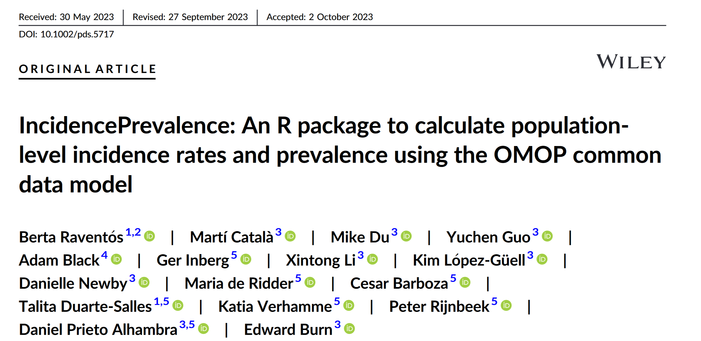
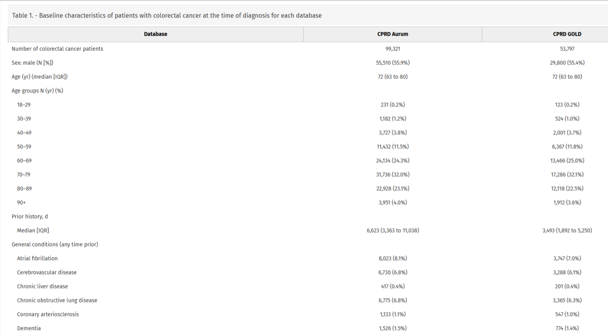

install.packages("IncidencePrevalence")IncidencePrevalence
Estimate Incidence and Prevalence in OMOP CDM

Overview
- The basics
- Interface
- More information
The Basics
Denominator population
Incidence rates
-
Prevalence
Point prevalence
Period prevalence
Denominator population
Observation periods
(4)-denominator%20no%20criteria.drawio.png)
Denominator population
Observation periods + study period
(4)-denom%20study%20period.drawio.png)
Denominator population
Observation periods + study period + prior history requirement
(4)-denom%20without%20age.drawio-01.png)
Denominator population
Observation periods + study period + prior history requirement + age (and sex) restriction

Incidence rates
Washout all history, no repetitive events

Incidence rates
No washout, no repetitive events

Incidence rates
Some washout, no repetitive events

Incidence rates
Some washout, repetitive events

Prevalence
Point prevalence

Prevalence
Period prevalence

Overview
- Concepts
- Interface
- More information
Required packages
generateDenominatorCohortSet()
Create a basic denominator population
cdm <- IncidencePrevalence::mockIncidencePrevalence(sampleSize = 50000)
cdm <- generateDenominatorCohortSet(cdm, name = "dpop")
cdm$dpop %>%
glimpse()Rows: ??
Columns: 4
Database: DuckDB v1.0.0 [dnewby@Windows 10 x64:R 4.2.3/:memory:]
$ cohort_definition_id <int> 1, 1, 1, 1, 1, 1, 1, 1, 1, 1, 1, 1, 1, 1, 1, 1, 1…
$ subject_id <int> 1, 3, 7, 11, 14, 21, 29, 32, 33, 36, 37, 41, 42, …
$ cohort_start_date <date> 1949-10-29, 1977-03-02, 1994-07-10, 1945-08-21, …
$ cohort_end_date <date> 1957-03-20, 1982-06-05, 1996-11-16, 1951-02-11, …generateDenominatorCohortSet()
Add a study period
cdm <- generateDenominatorCohortSet(
cdm = cdm,
name = "dpop",
cohortDateRange = as.Date(c("2008-01-01", "2012-01-01"))
)
cdm$dpop %>%
glimpse()Rows: ??
Columns: 4
Database: DuckDB v1.0.0 [dnewby@Windows 10 x64:R 4.2.3/:memory:]
$ cohort_definition_id <int> 1, 1, 1, 1, 1, 1, 1, 1, 1, 1, 1, 1, 1, 1, 1, 1, 1…
$ subject_id <int> 33, 41, 52, 59, 69, 76, 79, 89, 122, 141, 151, 16…
$ cohort_start_date <date> 2008-01-01, 2008-01-01, 2008-01-01, 2008-01-01, …
$ cohort_end_date <date> 2008-08-04, 2012-01-01, 2011-10-24, 2012-01-01, …generateDenominatorCohortSet()
Look at the n in the denominator
cohortCount(cdm$dpop)# A tibble: 1 × 3
cohort_definition_id number_records number_subjects
<int> <int> <int>
1 1 3575 3575Look at the settings you used for denominator
settings(cdm$dpop)# A tibble: 1 × 11
cohort_definition_id cohort_name age_group sex days_prior_observation
<int> <chr> <chr> <chr> <dbl>
1 1 denominator_cohor… 0 to 150 Both 0
# ℹ 6 more variables: start_date <date>, end_date <date>,
# requirements_at_entry <chr>, target_cohort_definition_id <int>,
# target_cohort_name <chr>, time_at_risk <chr>generateDenominatorCohortSet()
How did you get the denominator population?
attrition(cdm$dpop)# A tibble: 8 × 7
cohort_definition_id number_records number_subjects reason_id reason
<int> <int> <int> <int> <chr>
1 1 50000 50000 1 Starting popula…
2 1 50000 50000 2 Missing year of…
3 1 50000 50000 3 Missing sex
4 1 50000 50000 4 Cannot satisfy …
5 1 3575 3575 5 No observation …
6 1 3575 3575 6 Doesn't satisfy…
7 1 3575 3575 7 Prior history r…
8 1 3575 3575 10 No observation …
# ℹ 2 more variables: excluded_records <int>, excluded_subjects <int>generateDenominatorCohortSet()
Adding in more stratification of denominator
cdm <- generateDenominatorCohortSet(
cdm = cdm,
name = "dpop",
cohortDateRange = as.Date(c("2008-01-01", "2012-01-01")),
ageGroup = list(
c(0, 49),
c(50, 100)
),
sex = c("Male", "Female"),
daysPriorObservation= c(0, 180)
)
cdm$dpop %>%
glimpse()Rows: ??
Columns: 4
Database: DuckDB v1.0.0 [dnewby@Windows 10 x64:R 4.2.3/:memory:]
$ cohort_definition_id <int> 1, 1, 1, 1, 1, 1, 1, 1, 1, 1, 1, 1, 1, 1, 1, 1, 1…
$ subject_id <int> 59, 89, 200, 208, 396, 501, 579, 581, 615, 642, 6…
$ cohort_start_date <date> 2008-01-01, 2008-01-01, 2008-01-01, 2008-01-01, …
$ cohort_end_date <date> 2012-01-01, 2009-08-06, 2010-12-23, 2012-01-01, …generateDenominatorCohortSet()
Have a look at the settings again
settings(cdm$dpop)# A tibble: 8 × 11
cohort_definition_id cohort_name age_group sex days_prior_observation
<int> <chr> <chr> <chr> <dbl>
1 1 denominator_cohor… 0 to 49 Male 0
2 2 denominator_cohor… 0 to 49 Male 180
3 3 denominator_cohor… 0 to 49 Fema… 0
4 4 denominator_cohor… 0 to 49 Fema… 180
5 5 denominator_cohor… 50 to 100 Male 0
6 6 denominator_cohor… 50 to 100 Male 180
7 7 denominator_cohor… 50 to 100 Fema… 0
8 8 denominator_cohor… 50 to 100 Fema… 180
# ℹ 6 more variables: start_date <date>, end_date <date>,
# requirements_at_entry <chr>, target_cohort_definition_id <int>,
# target_cohort_name <chr>, time_at_risk <chr>generateDenominatorCohortSet()
Have a look at the counts
cohortCount(cdm$dpop)# A tibble: 8 × 3
cohort_definition_id number_records number_subjects
<int> <int> <int>
1 1 973 973
2 2 959 959
3 3 902 902
4 4 890 890
5 5 933 933
6 6 925 925
7 7 922 922
8 8 900 900Adding time-invariant variables for stratification
If we want to stratify for some time-invariant variable e.g region, ethnicity, we need to add this variable to our denominator.
cdm$dpop <- cdm$dpop %>%
mutate(group = if_else(as.numeric(subject_id) < 20, "first", "second"))
cdm$dpop |>
glimpse()Rows: ??
Columns: 5
Database: DuckDB v1.0.0 [dnewby@Windows 10 x64:R 4.2.3/:memory:]
$ cohort_definition_id <int> 1, 1, 1, 1, 1, 1, 1, 1, 1, 1, 1, 1, 1, 1, 1, 1, 1…
$ subject_id <int> 59, 89, 200, 208, 396, 501, 579, 581, 615, 642, 6…
$ cohort_start_date <date> 2008-01-01, 2008-01-01, 2008-01-01, 2008-01-01, …
$ cohort_end_date <date> 2012-01-01, 2009-08-06, 2010-12-23, 2012-01-01, …
$ group <chr> "second", "second", "second", "second", "second",…generateTargetDenominatorCohortSet()
When we want to stratify on a time-varying variable, we can do this by creating a cohort for it. Once we have the cohort we will will use it when creating our denominator cohort.
generateTargetDenominatorCohortSet()
Code to create a target denominator
personTable <- tibble(
person_id = c("1", "2", "3", "4", "5"),
gender_concept_id = c(rep("8507", 2), rep("8532", 3)),
year_of_birth = 2000,
month_of_birth = 06,
day_of_birth = 01
)
observationPeriodTable <- tibble(
observation_period_id = "1",
person_id = c("1", "2", "3", "4", "5"),
observation_period_start_date = c(
as.Date("2010-12-19"),
as.Date("2005-04-01"),
as.Date("2009-04-10"),
as.Date("2010-08-20"),
as.Date("2010-01-01")
),
observation_period_end_date = c(
as.Date("2011-06-19"),
as.Date("2005-11-29"),
as.Date("2016-01-02"),
as.Date("2011-12-11"),
as.Date("2015-06-01")
)
)
acute_asthma <- tibble(
cohort_definition_id = rep("1", 5),
subject_id = c("3", "3", "5", "5", "2"),
cohort_start_date = c(
as.Date("2012-01-01"),
as.Date("2015-06-01"),
as.Date("2014-10-01"),
as.Date("2010-06-01"),
as.Date("2005-08-20")
),
cohort_end_date = c(
as.Date("2013-01-01"),
as.Date("2015-12-31"),
as.Date("2015-04-01"),
as.Date("2010-06-01"),
as.Date("2005-09-20")
)
)
# mock database
cdm <- IncidencePrevalence::mockIncidencePrevalence(
personTable = personTable,
observationPeriodTable = observationPeriodTable,
targetCohortTable = acute_asthma
)generateTargetDenominatorCohortSet()
Then we can create the target denominator cohort for just acute asthma patients
cdm <- generateTargetDenominatorCohortSet(
cdm = cdm,
name = "denominator_acute_asthma",
targetCohortTable = "target"
)
cdm$denominator_acute_asthma |>
dplyr::glimpse()Rows: ??
Columns: 4
Database: DuckDB v1.0.0 [dnewby@Windows 10 x64:R 4.2.3/:memory:]
$ cohort_definition_id <int> 1, 1, 1, 1, 1
$ subject_id <chr> "3", "3", "5", "5", "2"
$ cohort_start_date <date> 2012-01-01, 2015-06-01, 2014-10-01, 2010-06-01, 2…
$ cohort_end_date <date> 2013-01-01, 2015-12-31, 2015-04-01, 2010-06-01, 2…generateTargetDenominatorCohortSet()
- We can add demographic requirements like before.
- Note these are applied at the cohort start date of target cohort as default.
- You can change this but needs careful thought on why and impact.
cdm <- generateTargetDenominatorCohortSet(
cdm = cdm,
name = "denominator_acute_asthma_2",
ageGroup = list(c(11, 15)),
sex = "Female",
daysPriorObservation = 0,
targetCohortTable = "target",
requirementsAtEntry = TRUE
)
cdm$denominator_acute_asthma_2 |>
dplyr::glimpse()Rows: ??
Columns: 4
Database: DuckDB v1.0.0 [dnewby@Windows 10 x64:R 4.2.3/:memory:]
$ cohort_definition_id <int> 1, 1, 1
$ subject_id <chr> "3", "3", "5"
$ cohort_start_date <date> 2012-01-01, 2015-06-01, 2014-10-01
$ cohort_end_date <date> 2013-01-01, 2015-12-31, 2015-04-01estimateIncidence()
Generate our denominator then estimate yearly incidence with infinite outcome washout.
cdm <- IncidencePrevalence::mockIncidencePrevalence(
sampleSize = 50000,
outPre = 0.5
)
cdm <- generateDenominatorCohortSet(
cdm = cdm,
name = "denominator",
cohortDateRange = as.Date(c("2008-01-01", "2012-01-01")),
ageGroup = list(
c(0, 30),
c(31, 50),
c(51, 70),
c(71, 100)
)
)
inc <- estimateIncidence(
cdm = cdm,
denominatorTable = "denominator",
outcomeTable = "outcome",
interval = "years",
outcomeWashout = Inf,
repeatedEvents = FALSE
)estimateIncidence()
Rows: 288
Columns: 13
$ result_id <int> 1, 1, 1, 1, 1, 1, 1, 1, 1, 1, 1, 1, 1, 1, 1, 1, 1, 1,…
$ cdm_name <chr> "mock", "mock", "mock", "mock", "mock", "mock", "mock…
$ group_name <chr> "denominator_cohort_name &&& outcome_cohort_name", "d…
$ group_level <chr> "denominator_cohort_1 &&& cohort_1", "denominator_coh…
$ strata_name <chr> "overall", "overall", "overall", "overall", "overall"…
$ strata_level <chr> "overall", "overall", "overall", "overall", "overall"…
$ variable_name <chr> "Denominator", "Outcome", "Denominator", "Denominator…
$ variable_level <chr> NA, NA, NA, NA, NA, NA, NA, NA, NA, NA, NA, NA, NA, N…
$ estimate_name <chr> "denominator_count", "outcome_count", "person_days", …
$ estimate_type <chr> "integer", "integer", "numeric", "numeric", "numeric"…
$ estimate_value <chr> "662", "63", "189075", "517.659", "12170.174", "9351.…
$ additional_name <chr> "incidence_start_date &&& incidence_end_date &&& anal…
$ additional_level <chr> "2008-01-01 &&& 2008-12-31 &&& years", "2008-01-01 &&…estimateIncidence()
Generate our denominator then estimate monthly incidence with 0 and 365 outcome washout
inc <- estimateIncidence(
cdm = cdm,
denominatorTable = "denominator",
outcomeTable = "outcome",
interval = c("Months"),
outcomeWashout = c(0, 365),
repeatedEvents = FALSE
)
inc %>%
glimpse()Rows: 3,040
Columns: 13
$ result_id <int> 1, 1, 1, 1, 1, 1, 1, 1, 1, 1, 1, 1, 1, 1, 1, 1, 1, 1,…
$ cdm_name <chr> "mock", "mock", "mock", "mock", "mock", "mock", "mock…
$ group_name <chr> "denominator_cohort_name &&& outcome_cohort_name", "d…
$ group_level <chr> "denominator_cohort_1 &&& cohort_1", "denominator_coh…
$ strata_name <chr> "overall", "overall", "overall", "overall", "overall"…
$ strata_level <chr> "overall", "overall", "overall", "overall", "overall"…
$ variable_name <chr> "Denominator", "Outcome", "Denominator", "Denominator…
$ variable_level <chr> NA, NA, NA, NA, NA, NA, NA, NA, NA, NA, NA, NA, NA, N…
$ estimate_name <chr> "denominator_count", "outcome_count", "person_days", …
$ estimate_type <chr> "integer", "integer", "numeric", "numeric", "numeric"…
$ estimate_value <chr> "766", "3", "23332", "63.88", "4696.306", "968.491", …
$ additional_name <chr> "incidence_start_date &&& incidence_end_date &&& anal…
$ additional_level <chr> "2008-01-01 &&& 2008-01-31 &&& months", "2008-01-01 &…estimateIncidence()
We can plot the results with one argument!
plot <- plotIncidence(inc,
facet = "denominator_age_group")estimateIncidence()
Pretty plot but you can make it better by changing settings.
plot 
estimateIncidence()
We can make a nice table of the incidence results.
tableIncidence(inc)| Denominator cohort name | Variable name | Incidence start date | Incidence end date | Denominator age group | Denominator sex | Analysis outcome washout | Estimate name | |||
|---|---|---|---|---|---|---|---|---|---|---|
| Denominator (N) | Person-years | Outcome (N) | Incidence 100,000 person-years [95% CI] | |||||||
| mock; cohort_1 | ||||||||||
| denominator_cohort_1 | Denominator | 2008-01-01 | 2008-01-31 | 0 to 30 | Both | 0 | 766 | 63.88 | - | - |
| Outcome | 2008-01-01 | 2008-01-31 | 0 to 30 | Both | 0 | - | - | 3 | 4,696.31 (968.49 - 13,724.60) | |
| Denominator | 2008-02-01 | 2008-02-29 | 0 to 30 | Both | 0 | 761 | 59.27 | - | - | |
| Outcome | 2008-02-01 | 2008-02-29 | 0 to 30 | Both | 0 | - | - | 3 | 5,061.41 (1,043.79 - 14,791.59) | |
| Denominator | 2008-03-01 | 2008-03-31 | 0 to 30 | Both | 0 | 758 | 62.81 | - | - | |
| Outcome | 2008-03-01 | 2008-03-31 | 0 to 30 | Both | 0 | - | - | 7 | 11,144.90 (4,480.83 - 22,962.75) | |
| Denominator | 2008-04-01 | 2008-04-30 | 0 to 30 | Both | 0 | 742 | 59.32 | - | - | |
| Outcome | 2008-04-01 | 2008-04-30 | 0 to 30 | Both | 0 | - | - | 7 | 11,800.21 (4,744.30 - 24,312.93) | |
| Denominator | 2008-05-01 | 2008-05-31 | 0 to 30 | Both | 0 | 723 | 60.78 | - | - | |
| Outcome | 2008-05-01 | 2008-05-31 | 0 to 30 | Both | 0 | - | - | 3 | 4,935.83 (1,017.89 - 14,424.60) | |
| Denominator | 2008-06-01 | 2008-06-30 | 0 to 30 | Both | 0 | 718 | 57.90 | - | - | |
| Outcome | 2008-06-01 | 2008-06-30 | 0 to 30 | Both | 0 | - | - | 7 | 12,089.18 (4,860.48 - 24,908.34) | |
| Denominator | 2008-07-01 | 2008-07-31 | 0 to 30 | Both | 0 | 706 | 59.01 | - | - | |
| Outcome | 2008-07-01 | 2008-07-31 | 0 to 30 | Both | 0 | - | - | 4 | 6,778.05 (1,846.79 - 17,354.51) | |
| Denominator | 2008-08-01 | 2008-08-31 | 0 to 30 | Both | 0 | 706 | 58.66 | - | - | |
| Outcome | 2008-08-01 | 2008-08-31 | 0 to 30 | Both | 0 | - | - | 6 | 10,228.78 (3,753.78 - 22,263.76) | |
| Denominator | 2008-09-01 | 2008-09-30 | 0 to 30 | Both | 0 | 695 | 56.20 | - | - | |
| Outcome | 2008-09-01 | 2008-09-30 | 0 to 30 | Both | 0 | - | - | 8 | 14,234.12 (6,145.28 - 28,046.88) | |
| Denominator | 2008-10-01 | 2008-10-31 | 0 to 30 | Both | 0 | 690 | 57.10 | - | - | |
| Outcome | 2008-10-01 | 2008-10-31 | 0 to 30 | Both | 0 | - | - | 3 | 5,253.66 (1,083.43 - 15,353.44) | |
| Denominator | 2008-11-01 | 2008-11-30 | 0 to 30 | Both | 0 | 679 | 54.41 | - | - | |
| Outcome | 2008-11-01 | 2008-11-30 | 0 to 30 | Both | 0 | - | - | 4 | 7,351.73 (2,003.10 - 18,823.34) | |
| Denominator | 2008-12-01 | 2008-12-31 | 0 to 30 | Both | 0 | 678 | 56.12 | - | - | |
| Outcome | 2008-12-01 | 2008-12-31 | 0 to 30 | Both | 0 | - | - | 8 | 14,255.17 (6,154.37 - 28,088.36) | |
| Denominator | 2009-01-01 | 2009-01-31 | 0 to 30 | Both | 0 | 668 | 55.59 | - | - | |
| Outcome | 2009-01-01 | 2009-01-31 | 0 to 30 | Both | 0 | - | - | 7 | 12,592.42 (5,062.81 - 25,945.20) | |
| Denominator | 2009-02-01 | 2009-02-28 | 0 to 30 | Both | 0 | 656 | 49.40 | - | - | |
| Outcome | 2009-02-01 | 2009-02-28 | 0 to 30 | Both | 0 | - | - | 6 | 12,146.73 (4,457.64 - 26,438.32) | |
| Denominator | 2009-03-01 | 2009-03-31 | 0 to 30 | Both | 0 | 648 | 54.18 | - | - | |
| Outcome | 2009-03-01 | 2009-03-31 | 0 to 30 | Both | 0 | - | - | 2 | 3,691.60 (447.07 - 13,335.34) | |
| Denominator | 2009-04-01 | 2009-04-30 | 0 to 30 | Both | 0 | 649 | 52.01 | - | - | |
| Outcome | 2009-04-01 | 2009-04-30 | 0 to 30 | Both | 0 | - | - | 7 | 13,458.69 (5,411.09 - 27,730.05) | |
| Denominator | 2009-05-01 | 2009-05-31 | 0 to 30 | Both | 0 | 645 | 52.99 | - | - | |
| Outcome | 2009-05-01 | 2009-05-31 | 0 to 30 | Both | 0 | - | - | 9 | 16,983.06 (7,765.73 - 32,239.13) | |
| Denominator | 2009-06-01 | 2009-06-30 | 0 to 30 | Both | 0 | 631 | 50.56 | - | - | |
| Outcome | 2009-06-01 | 2009-06-30 | 0 to 30 | Both | 0 | - | - | 6 | 11,867.79 (4,355.27 - 25,831.19) | |
| Denominator | 2009-07-01 | 2009-07-31 | 0 to 30 | Both | 0 | 616 | 51.49 | - | - | |
| Outcome | 2009-07-01 | 2009-07-31 | 0 to 30 | Both | 0 | - | - | 6 | 11,652.07 (4,276.10 - 25,361.65) | |
| Denominator | 2009-08-01 | 2009-08-31 | 0 to 30 | Both | 0 | 614 | 50.94 | - | - | |
| Outcome | 2009-08-01 | 2009-08-31 | 0 to 30 | Both | 0 | - | - | 4 | 7,853.15 (2,139.72 - 20,107.17) | |
| Denominator | 2009-09-01 | 2009-09-30 | 0 to 30 | Both | 0 | 612 | 49.27 | - | - | |
| Outcome | 2009-09-01 | 2009-09-30 | 0 to 30 | Both | 0 | - | - | 5 | 10,148.16 (3,295.08 - 23,682.43) | |
| Denominator | 2009-10-01 | 2009-10-31 | 0 to 30 | Both | 0 | 604 | 50.52 | - | - | |
| Outcome | 2009-10-01 | 2009-10-31 | 0 to 30 | Both | 0 | - | - | 4 | 7,918.28 (2,157.47 - 20,273.95) | |
| Denominator | 2009-11-01 | 2009-11-30 | 0 to 30 | Both | 0 | 603 | 48.83 | - | - | |
| Outcome | 2009-11-01 | 2009-11-30 | 0 to 30 | Both | 0 | - | - | 4 | 8,192.19 (2,232.10 - 20,975.26) | |
| Denominator | 2009-12-01 | 2009-12-31 | 0 to 30 | Both | 0 | 599 | 49.83 | - | - | |
| Outcome | 2009-12-01 | 2009-12-31 | 0 to 30 | Both | 0 | - | - | 4 | 8,027.94 (2,187.34 - 20,554.71) | |
| Denominator | 2010-01-01 | 2010-01-31 | 0 to 30 | Both | 0 | 580 | 48.64 | - | - | |
| Outcome | 2010-01-01 | 2010-01-31 | 0 to 30 | Both | 0 | - | - | 4 | 8,223.18 (2,240.54 - 21,054.60) | |
| Denominator | 2010-02-01 | 2010-02-28 | 0 to 30 | Both | 0 | 566 | 43.01 | - | - | |
| Outcome | 2010-02-01 | 2010-02-28 | 0 to 30 | Both | 0 | - | - | 5 | 11,625.47 (3,774.76 - 27,129.98) | |
| Denominator | 2010-03-01 | 2010-03-31 | 0 to 30 | Both | 0 | 554 | 46.37 | - | - | |
| Outcome | 2010-03-01 | 2010-03-31 | 0 to 30 | Both | 0 | - | - | 5 | 10,782.60 (3,501.08 - 25,162.99) | |
| Denominator | 2010-04-01 | 2010-04-30 | 0 to 30 | Both | 0 | 539 | 43.83 | - | - | |
| Outcome | 2010-04-01 | 2010-04-30 | 0 to 30 | Both | 0 | - | - | 3 | 6,844.63 (1,411.53 - 20,002.90) | |
| Denominator | 2010-05-01 | 2010-05-31 | 0 to 30 | Both | 0 | 528 | 44.40 | - | - | |
| Outcome | 2010-05-01 | 2010-05-31 | 0 to 30 | Both | 0 | - | - | 4 | 9,009.62 (2,454.82 - 23,068.20) | |
| Denominator | 2010-06-01 | 2010-06-30 | 0 to 30 | Both | 0 | 514 | 41.66 | - | - | |
| Outcome | 2010-06-01 | 2010-06-30 | 0 to 30 | Both | 0 | - | - | 3 | 7,200.81 (1,484.98 - 21,043.81) | |
| Denominator | 2010-07-01 | 2010-07-31 | 0 to 30 | Both | 0 | 501 | 42.03 | - | - | |
| Outcome | 2010-07-01 | 2010-07-31 | 0 to 30 | Both | 0 | - | - | 6 | 14,275.86 (5,238.99 - 31,072.53) | |
| Denominator | 2010-08-01 | 2010-08-31 | 0 to 30 | Both | 0 | 489 | 40.84 | - | - | |
| Outcome | 2010-08-01 | 2010-08-31 | 0 to 30 | Both | 0 | - | - | 5 | 12,242.00 (3,974.94 - 28,568.74) | |
| Denominator | 2010-09-01 | 2010-09-30 | 0 to 30 | Both | 0 | 473 | 38.30 | - | - | |
| Outcome | 2010-09-01 | 2010-09-30 | 0 to 30 | Both | 0 | - | - | 5 | 13,053.13 (4,238.31 - 30,461.64) | |
| Denominator | 2010-10-01 | 2010-10-31 | 0 to 30 | Both | 0 | 458 | 38.32 | - | - | |
| Outcome | 2010-10-01 | 2010-10-31 | 0 to 30 | Both | 0 | - | - | 3 | 7,827.99 (1,614.32 - 22,876.72) | |
| Denominator | 2010-11-01 | 2010-11-30 | 0 to 30 | Both | 0 | 444 | 36.06 | - | - | |
| Outcome | 2010-11-01 | 2010-11-30 | 0 to 30 | Both | 0 | - | - | 1 | 2,773.16 (70.21 - 15,451.03) | |
| Denominator | 2010-12-01 | 2010-12-31 | 0 to 30 | Both | 0 | 435 | 36.26 | - | - | |
| Outcome | 2010-12-01 | 2010-12-31 | 0 to 30 | Both | 0 | - | - | 5 | 13,789.30 (4,477.35 - 32,179.62) | |
| Denominator | 2011-01-01 | 2011-01-31 | 0 to 30 | Both | 0 | 421 | 35.18 | - | - | |
| Outcome | 2011-01-01 | 2011-01-31 | 0 to 30 | Both | 0 | - | - | 2 | 5,684.89 (688.47 - 20,535.77) | |
| Denominator | 2011-02-01 | 2011-02-28 | 0 to 30 | Both | 0 | 410 | 31.40 | - | - | |
| Outcome | 2011-02-01 | 2011-02-28 | 0 to 30 | Both | 0 | - | - | 1 | 3,185.22 (80.64 - 17,746.91) | |
| Denominator | 2011-03-01 | 2011-03-31 | 0 to 30 | Both | 0 | 408 | 34.07 | - | - | |
| Outcome | 2011-03-01 | 2011-03-31 | 0 to 30 | Both | 0 | - | - | 5 | 14,675.67 (4,765.15 - 34,248.11) | |
| Denominator | 2011-04-01 | 2011-04-30 | 0 to 30 | Both | 0 | 392 | 32.02 | - | - | |
| Outcome | 2011-04-01 | 2011-04-30 | 0 to 30 | Both | 0 | - | - | 1 | 3,123.15 (79.07 - 17,401.05) | |
| Denominator | 2011-05-01 | 2011-05-31 | 0 to 30 | Both | 0 | 383 | 32.02 | - | - | |
| Outcome | 2011-05-01 | 2011-05-31 | 0 to 30 | Both | 0 | - | - | 2 | 6,245.71 (756.38 - 22,561.64) | |
| Denominator | 2011-06-01 | 2011-06-30 | 0 to 30 | Both | 0 | 373 | 30.42 | - | - | |
| Outcome | 2011-06-01 | 2011-06-30 | 0 to 30 | Both | 0 | - | - | 1 | 3,286.99 (83.22 - 18,313.92) | |
| Denominator | 2011-07-01 | 2011-07-31 | 0 to 30 | Both | 0 | 368 | 30.69 | - | - | |
| Outcome | 2011-07-01 | 2011-07-31 | 0 to 30 | Both | 0 | - | - | 1 | 3,258.82 (82.51 - 18,156.96) | |
| Denominator | 2011-08-01 | 2011-08-31 | 0 to 30 | Both | 0 | 355 | 29.81 | - | - | |
| Outcome | 2011-08-01 | 2011-08-31 | 0 to 30 | Both | 0 | - | - | 1 | 3,354.35 (84.92 - 18,689.26) | |
| Denominator | 2011-09-01 | 2011-09-30 | 0 to 30 | Both | 0 | 348 | 28.04 | - | - | |
| Outcome | 2011-09-01 | 2011-09-30 | 0 to 30 | Both | 0 | - | - | 4 | 14,267.37 (3,887.38 - 36,530.14) | |
| Denominator | 2011-10-01 | 2011-10-31 | 0 to 30 | Both | 0 | 336 | 28.09 | - | - | |
| Outcome | 2011-10-01 | 2011-10-31 | 0 to 30 | Both | 0 | - | - | 2 | 7,119.21 (862.17 - 25,717.04) | |
| Denominator | 2011-11-01 | 2011-11-30 | 0 to 30 | Both | 0 | 326 | 26.19 | - | - | |
| Outcome | 2011-11-01 | 2011-11-30 | 0 to 30 | Both | 0 | - | - | 2 | 7,635.63 (924.71 - 27,582.51) | |
| Denominator | 2011-12-01 | 2011-12-31 | 0 to 30 | Both | 0 | 314 | 26.37 | - | - | |
| Outcome | 2011-12-01 | 2011-12-31 | 0 to 30 | Both | 0 | - | - | 4 | 15,168.18 (4,132.82 - 38,836.56) | |
| denominator_cohort_2 | Denominator | 2008-01-01 | 2008-01-31 | 31 to 50 | Both | 0 | 713 | 59.08 | - | - |
| Outcome | 2008-01-01 | 2008-01-31 | 31 to 50 | Both | 0 | - | - | 4 | 6,771.05 (1,844.88 - 17,336.59) | |
| Denominator | 2008-02-01 | 2008-02-29 | 31 to 50 | Both | 0 | 707 | 55.32 | - | - | |
| Outcome | 2008-02-01 | 2008-02-29 | 31 to 50 | Both | 0 | - | - | 3 | 5,423.39 (1,118.43 - 15,849.43) | |
| Denominator | 2008-03-01 | 2008-03-31 | 31 to 50 | Both | 0 | 708 | 58.98 | - | - | |
| Outcome | 2008-03-01 | 2008-03-31 | 31 to 50 | Both | 0 | - | - | 6 | 10,173.11 (3,733.35 - 22,142.58) | |
| Denominator | 2008-04-01 | 2008-04-30 | 31 to 50 | Both | 0 | 705 | 57.17 | - | - | |
| Outcome | 2008-04-01 | 2008-04-30 | 31 to 50 | Both | 0 | - | - | 2 | 3,498.22 (423.65 - 12,636.76) | |
| Denominator | 2008-05-01 | 2008-05-31 | 31 to 50 | Both | 0 | 703 | 58.94 | - | - | |
| Outcome | 2008-05-01 | 2008-05-31 | 31 to 50 | Both | 0 | - | - | 2 | 3,393.57 (410.98 - 12,258.74) | |
| Denominator | 2008-06-01 | 2008-06-30 | 31 to 50 | Both | 0 | 706 | 56.85 | - | - | |
| Outcome | 2008-06-01 | 2008-06-30 | 31 to 50 | Both | 0 | - | - | 6 | 10,554.27 (3,873.23 - 22,972.21) | |
| Denominator | 2008-07-01 | 2008-07-31 | 31 to 50 | Both | 0 | 707 | 58.83 | - | - | |
| Outcome | 2008-07-01 | 2008-07-31 | 31 to 50 | Both | 0 | - | - | 3 | 5,099.61 (1,051.66 - 14,903.23) | |
| Denominator | 2008-08-01 | 2008-08-31 | 31 to 50 | Both | 0 | 702 | 58.58 | - | - | |
| Outcome | 2008-08-01 | 2008-08-31 | 31 to 50 | Both | 0 | - | - | 3 | 5,121.03 (1,056.08 - 14,965.81) | |
| Denominator | 2008-09-01 | 2008-09-30 | 31 to 50 | Both | 0 | 694 | 55.85 | - | - | |
| Outcome | 2008-09-01 | 2008-09-30 | 31 to 50 | Both | 0 | - | - | 8 | 14,324.85 (6,184.45 - 28,225.67) | |
| Denominator | 2008-10-01 | 2008-10-31 | 31 to 50 | Both | 0 | 684 | 56.47 | - | - | |
| Outcome | 2008-10-01 | 2008-10-31 | 31 to 50 | Both | 0 | - | - | 3 | 5,312.46 (1,095.56 - 15,525.27) | |
| Denominator | 2008-11-01 | 2008-11-30 | 31 to 50 | Both | 0 | 665 | 53.90 | - | - | |
| Outcome | 2008-11-01 | 2008-11-30 | 31 to 50 | Both | 0 | - | - | 3 | 5,565.55 (1,147.75 - 16,264.91) | |
| Denominator | 2008-12-01 | 2008-12-31 | 31 to 50 | Both | 0 | 660 | 54.59 | - | - | |
| Outcome | 2008-12-01 | 2008-12-31 | 31 to 50 | Both | 0 | - | - | 7 | 12,823.57 (5,155.74 - 26,421.45) | |
| Denominator | 2009-01-01 | 2009-01-31 | 31 to 50 | Both | 0 | 660 | 54.50 | - | - | |
| Outcome | 2009-01-01 | 2009-01-31 | 31 to 50 | Both | 0 | - | - | 4 | 7,339.85 (1,999.86 - 18,792.94) | |
| Denominator | 2009-02-01 | 2009-02-28 | 31 to 50 | Both | 0 | 652 | 49.14 | - | - | |
| Outcome | 2009-02-01 | 2009-02-28 | 31 to 50 | Both | 0 | - | - | 3 | 6,105.13 (1,259.03 - 17,841.78) | |
| Denominator | 2009-03-01 | 2009-03-31 | 31 to 50 | Both | 0 | 648 | 54.20 | - | - | |
| Outcome | 2009-03-01 | 2009-03-31 | 31 to 50 | Both | 0 | - | - | 3 | 5,535.46 (1,141.55 - 16,176.97) | |
| Denominator | 2009-04-01 | 2009-04-30 | 31 to 50 | Both | 0 | 645 | 51.95 | - | - | |
| Outcome | 2009-04-01 | 2009-04-30 | 31 to 50 | Both | 0 | - | - | 5 | 9,624.45 (3,125.03 - 22,460.26) | |
| Denominator | 2009-05-01 | 2009-05-31 | 31 to 50 | Both | 0 | 643 | 53.76 | - | - | |
| Outcome | 2009-05-01 | 2009-05-31 | 31 to 50 | Both | 0 | - | - | 3 | 5,580.36 (1,150.80 - 16,308.17) | |
| Denominator | 2009-06-01 | 2009-06-30 | 31 to 50 | Both | 0 | 652 | 52.17 | - | - | |
| Outcome | 2009-06-01 | 2009-06-30 | 31 to 50 | Both | 0 | - | - | 4 | 7,666.51 (2,088.86 - 19,629.30) | |
| Denominator | 2009-07-01 | 2009-07-31 | 31 to 50 | Both | 0 | 654 | 54.36 | - | - | |
| Outcome | 2009-07-01 | 2009-07-31 | 31 to 50 | Both | 0 | - | - | 5 | 9,198.45 (2,986.71 - 21,466.11) | |
| Denominator | 2009-08-01 | 2009-08-31 | 31 to 50 | Both | 0 | 653 | 54.20 | - | - | |
| Outcome | 2009-08-01 | 2009-08-31 | 31 to 50 | Both | 0 | - | - | 9 | 16,605.78 (7,593.22 - 31,522.94) | |
| Denominator | 2009-09-01 | 2009-09-30 | 31 to 50 | Both | 0 | 647 | 52.11 | - | - | |
| Outcome | 2009-09-01 | 2009-09-30 | 31 to 50 | Both | 0 | - | - | 4 | 7,676.51 (2,091.59 - 19,654.92) | |
| Denominator | 2009-10-01 | 2009-10-31 | 31 to 50 | Both | 0 | 645 | 53.50 | - | - | |
| Outcome | 2009-10-01 | 2009-10-31 | 31 to 50 | Both | 0 | - | - | 7 | 13,084.11 (5,260.49 - 26,958.27) | |
| Denominator | 2009-11-01 | 2009-11-30 | 31 to 50 | Both | 0 | 629 | 50.71 | - | - | |
| Outcome | 2009-11-01 | 2009-11-30 | 31 to 50 | Both | 0 | - | - | 5 | 9,859.99 (3,201.51 - 23,009.92) | |
| Denominator | 2009-12-01 | 2009-12-31 | 31 to 50 | Both | 0 | 632 | 52.01 | - | - | |
| Outcome | 2009-12-01 | 2009-12-31 | 31 to 50 | Both | 0 | - | - | 4 | 7,690.24 (2,095.33 - 19,690.06) | |
| Denominator | 2010-01-01 | 2010-01-31 | 31 to 50 | Both | 0 | 620 | 51.95 | - | - | |
| Outcome | 2010-01-01 | 2010-01-31 | 31 to 50 | Both | 0 | - | - | 6 | 11,550.01 (4,238.65 - 25,139.51) | |
| Denominator | 2010-02-01 | 2010-02-28 | 31 to 50 | Both | 0 | 607 | 46.00 | - | - | |
| Outcome | 2010-02-01 | 2010-02-28 | 31 to 50 | Both | 0 | - | - | 7 | 15,217.72 (6,118.31 - 31,354.32) | |
| Denominator | 2010-03-01 | 2010-03-31 | 31 to 50 | Both | 0 | 591 | 49.31 | - | - | |
| Outcome | 2010-03-01 | 2010-03-31 | 31 to 50 | Both | 0 | - | - | 6 | 12,168.16 (4,465.50 - 26,484.97) | |
| Denominator | 2010-04-01 | 2010-04-30 | 31 to 50 | Both | 0 | 575 | 46.77 | - | - | |
| Outcome | 2010-04-01 | 2010-04-30 | 31 to 50 | Both | 0 | - | - | 1 | 2,138.08 (54.13 - 11,912.60) | |
| Denominator | 2010-05-01 | 2010-05-31 | 31 to 50 | Both | 0 | 566 | 46.95 | - | - | |
| Outcome | 2010-05-01 | 2010-05-31 | 31 to 50 | Both | 0 | - | - | 4 | 8,520.43 (2,321.53 - 21,815.68) | |
| Denominator | 2010-06-01 | 2010-06-30 | 31 to 50 | Both | 0 | 547 | 44.55 | - | - | |
| Outcome | 2010-06-01 | 2010-06-30 | 31 to 50 | Both | 0 | - | - | 1 | 2,244.52 (56.83 - 12,505.65) | |
| Denominator | 2010-07-01 | 2010-07-31 | 31 to 50 | Both | 0 | 538 | 45.03 | - | - | |
| Outcome | 2010-07-01 | 2010-07-31 | 31 to 50 | Both | 0 | - | - | 6 | 13,322.97 (4,889.30 - 28,998.50) | |
| Denominator | 2010-08-01 | 2010-08-31 | 31 to 50 | Both | 0 | 527 | 44.20 | - | - | |
| Outcome | 2010-08-01 | 2010-08-31 | 31 to 50 | Both | 0 | - | - | 5 | 11,312.99 (3,673.30 - 26,400.73) | |
| Denominator | 2010-09-01 | 2010-09-30 | 31 to 50 | Both | 0 | 516 | 42.04 | - | - | |
| Outcome | 2010-09-01 | 2010-09-30 | 31 to 50 | Both | 0 | - | - | 3 | 7,135.72 (1,471.56 - 20,853.61) | |
| Denominator | 2010-10-01 | 2010-10-31 | 31 to 50 | Both | 0 | 507 | 42.04 | - | - | |
| Outcome | 2010-10-01 | 2010-10-31 | 31 to 50 | Both | 0 | - | - | 2 | 4,757.37 (576.14 - 17,185.27) | |
| Denominator | 2010-11-01 | 2010-11-30 | 31 to 50 | Both | 0 | 491 | 39.77 | - | - | |
| Outcome | 2010-11-01 | 2010-11-30 | 31 to 50 | Both | 0 | - | - | 4 | 10,057.83 (2,740.42 - 25,752.05) | |
| Denominator | 2010-12-01 | 2010-12-31 | 31 to 50 | Both | 0 | 482 | 40.22 | - | - | |
| Outcome | 2010-12-01 | 2010-12-31 | 31 to 50 | Both | 0 | - | - | 3 | 7,458.60 (1,538.14 - 21,797.21) | |
| Denominator | 2011-01-01 | 2011-01-31 | 31 to 50 | Both | 0 | 470 | 39.17 | - | - | |
| Outcome | 2011-01-01 | 2011-01-31 | 31 to 50 | Both | 0 | - | - | 4 | 10,211.11 (2,782.18 - 26,144.51) | |
| Denominator | 2011-02-01 | 2011-02-28 | 31 to 50 | Both | 0 | 458 | 34.62 | - | - | |
| Outcome | 2011-02-01 | 2011-02-28 | 31 to 50 | Both | 0 | - | - | 2 | 5,777.84 (699.72 - 20,871.55) | |
| Denominator | 2011-03-01 | 2011-03-31 | 31 to 50 | Both | 0 | 446 | 37.56 | - | - | |
| Outcome | 2011-03-01 | 2011-03-31 | 31 to 50 | Both | 0 | - | - | 1 | 2,662.19 (67.40 - 14,832.80) | |
| Denominator | 2011-04-01 | 2011-04-30 | 31 to 50 | Both | 0 | 442 | 36.13 | - | - | |
| Outcome | 2011-04-01 | 2011-04-30 | 31 to 50 | Both | 0 | - | - | 0 | 0.00 (0.00 - 10,208.89) | |
| Denominator | 2011-05-01 | 2011-05-31 | 31 to 50 | Both | 0 | 441 | 36.80 | - | - | |
| Outcome | 2011-05-01 | 2011-05-31 | 31 to 50 | Both | 0 | - | - | 4 | 10,868.98 (2,961.43 - 27,828.89) | |
| Denominator | 2011-06-01 | 2011-06-30 | 31 to 50 | Both | 0 | 431 | 34.79 | - | - | |
| Outcome | 2011-06-01 | 2011-06-30 | 31 to 50 | Both | 0 | - | - | 5 | 14,373.18 (4,666.93 - 33,542.22) | |
| Denominator | 2011-07-01 | 2011-07-31 | 31 to 50 | Both | 0 | 420 | 35.09 | - | - | |
| Outcome | 2011-07-01 | 2011-07-31 | 31 to 50 | Both | 0 | - | - | 3 | 8,548.47 (1,762.90 - 24,982.26) | |
| Denominator | 2011-08-01 | 2011-08-31 | 31 to 50 | Both | 0 | 408 | 34.00 | - | - | |
| Outcome | 2011-08-01 | 2011-08-31 | 31 to 50 | Both | 0 | - | - | 5 | 14,705.45 (4,774.82 - 34,317.61) | |
| Denominator | 2011-09-01 | 2011-09-30 | 31 to 50 | Both | 0 | 397 | 32.08 | - | - | |
| Outcome | 2011-09-01 | 2011-09-30 | 31 to 50 | Both | 0 | - | - | 3 | 9,351.91 (1,928.59 - 27,330.26) | |
| Denominator | 2011-10-01 | 2011-10-31 | 31 to 50 | Both | 0 | 388 | 32.36 | - | - | |
| Outcome | 2011-10-01 | 2011-10-31 | 31 to 50 | Both | 0 | - | - | 1 | 3,089.85 (78.23 - 17,215.56) | |
| Denominator | 2011-11-01 | 2011-11-30 | 31 to 50 | Both | 0 | 379 | 30.45 | - | - | |
| Outcome | 2011-11-01 | 2011-11-30 | 31 to 50 | Both | 0 | - | - | 4 | 13,136.29 (3,579.20 - 33,634.12) | |
| Denominator | 2011-12-01 | 2011-12-31 | 31 to 50 | Both | 0 | 366 | 30.78 | - | - | |
| Outcome | 2011-12-01 | 2011-12-31 | 31 to 50 | Both | 0 | - | - | 1 | 3,248.65 (82.25 - 18,100.33) | |
| denominator_cohort_3 | Denominator | 2008-01-01 | 2008-01-31 | 51 to 70 | Both | 0 | 669 | 55.44 | - | - |
| Outcome | 2008-01-01 | 2008-01-31 | 51 to 70 | Both | 0 | - | - | 5 | 9,018.60 (2,928.31 - 21,046.40) | |
| Denominator | 2008-02-01 | 2008-02-29 | 51 to 70 | Both | 0 | 664 | 51.73 | - | - | |
| Outcome | 2008-02-01 | 2008-02-29 | 51 to 70 | Both | 0 | - | - | 6 | 11,598.24 (4,256.35 - 25,244.48) | |
| Denominator | 2008-03-01 | 2008-03-31 | 51 to 70 | Both | 0 | 659 | 54.30 | - | - | |
| Outcome | 2008-03-01 | 2008-03-31 | 51 to 70 | Both | 0 | - | - | 1 | 1,841.52 (46.62 - 10,260.29) | |
| Denominator | 2008-04-01 | 2008-04-30 | 51 to 70 | Both | 0 | 650 | 51.93 | - | - | |
| Outcome | 2008-04-01 | 2008-04-30 | 51 to 70 | Both | 0 | - | - | 7 | 13,480.72 (5,419.95 - 27,775.44) | |
| Denominator | 2008-05-01 | 2008-05-31 | 51 to 70 | Both | 0 | 638 | 53.08 | - | - | |
| Outcome | 2008-05-01 | 2008-05-31 | 51 to 70 | Both | 0 | - | - | 6 | 11,304.54 (4,148.57 - 24,605.23) | |
| Denominator | 2008-06-01 | 2008-06-30 | 51 to 70 | Both | 0 | 635 | 51.47 | - | - | |
| Outcome | 2008-06-01 | 2008-06-30 | 51 to 70 | Both | 0 | - | - | 5 | 9,713.64 (3,153.99 - 22,668.40) | |
| Denominator | 2008-07-01 | 2008-07-31 | 51 to 70 | Both | 0 | 641 | 53.26 | - | - | |
| Outcome | 2008-07-01 | 2008-07-31 | 51 to 70 | Both | 0 | - | - | 7 | 13,142.58 (5,284.00 - 27,078.73) | |
| Denominator | 2008-08-01 | 2008-08-31 | 51 to 70 | Both | 0 | 642 | 53.04 | - | - | |
| Outcome | 2008-08-01 | 2008-08-31 | 51 to 70 | Both | 0 | - | - | 5 | 9,427.20 (3,060.99 - 21,999.95) | |
| Denominator | 2008-09-01 | 2008-09-30 | 51 to 70 | Both | 0 | 631 | 50.72 | - | - | |
| Outcome | 2008-09-01 | 2008-09-30 | 51 to 70 | Both | 0 | - | - | 3 | 5,914.71 (1,219.76 - 17,285.29) | |
| Denominator | 2008-10-01 | 2008-10-31 | 51 to 70 | Both | 0 | 625 | 52.53 | - | - | |
| Outcome | 2008-10-01 | 2008-10-31 | 51 to 70 | Both | 0 | - | - | 4 | 7,614.55 (2,074.71 - 19,496.28) | |
| Denominator | 2008-11-01 | 2008-11-30 | 51 to 70 | Both | 0 | 632 | 50.85 | - | - | |
| Outcome | 2008-11-01 | 2008-11-30 | 51 to 70 | Both | 0 | - | - | 1 | 1,966.57 (49.79 - 10,957.02) | |
| Denominator | 2008-12-01 | 2008-12-31 | 51 to 70 | Both | 0 | 626 | 52.23 | - | - | |
| Outcome | 2008-12-01 | 2008-12-31 | 51 to 70 | Both | 0 | - | - | 6 | 11,486.99 (4,215.52 - 25,002.34) | |
| Denominator | 2009-01-01 | 2009-01-31 | 51 to 70 | Both | 0 | 627 | 52.12 | - | - | |
| Outcome | 2009-01-01 | 2009-01-31 | 51 to 70 | Both | 0 | - | - | 4 | 7,674.89 (2,091.15 - 19,650.77) | |
| Denominator | 2009-02-01 | 2009-02-28 | 51 to 70 | Both | 0 | 630 | 47.51 | - | - | |
| Outcome | 2009-02-01 | 2009-02-28 | 51 to 70 | Both | 0 | - | - | 1 | 2,104.82 (53.29 - 11,727.31) | |
| Denominator | 2009-03-01 | 2009-03-31 | 51 to 70 | Both | 0 | 629 | 51.82 | - | - | |
| Outcome | 2009-03-01 | 2009-03-31 | 51 to 70 | Both | 0 | - | - | 10 | 19,297.94 (9,254.11 - 35,489.60) | |
| Denominator | 2009-04-01 | 2009-04-30 | 51 to 70 | Both | 0 | 617 | 49.66 | - | - | |
| Outcome | 2009-04-01 | 2009-04-30 | 51 to 70 | Both | 0 | - | - | 7 | 14,096.14 (5,667.38 - 29,043.43) | |
| Denominator | 2009-05-01 | 2009-05-31 | 51 to 70 | Both | 0 | 622 | 51.48 | - | - | |
| Outcome | 2009-05-01 | 2009-05-31 | 51 to 70 | Both | 0 | - | - | 3 | 5,827.84 (1,201.84 - 17,031.44) | |
| Denominator | 2009-06-01 | 2009-06-30 | 51 to 70 | Both | 0 | 618 | 49.93 | - | - | |
| Outcome | 2009-06-01 | 2009-06-30 | 51 to 70 | Both | 0 | - | - | 6 | 12,016.82 (4,409.96 - 26,155.57) | |
| Denominator | 2009-07-01 | 2009-07-31 | 51 to 70 | Both | 0 | 618 | 51.09 | - | - | |
| Outcome | 2009-07-01 | 2009-07-31 | 51 to 70 | Both | 0 | - | - | 8 | 15,657.42 (6,759.76 - 30,851.35) | |
| Denominator | 2009-08-01 | 2009-08-31 | 51 to 70 | Both | 0 | 617 | 51.09 | - | - | |
| Outcome | 2009-08-01 | 2009-08-31 | 51 to 70 | Both | 0 | - | - | 5 | 9,785.89 (3,177.45 - 22,836.99) | |
| Denominator | 2009-09-01 | 2009-09-30 | 51 to 70 | Both | 0 | 609 | 49.19 | - | - | |
| Outcome | 2009-09-01 | 2009-09-30 | 51 to 70 | Both | 0 | - | - | 9 | 18,294.91 (8,365.60 - 34,729.45) | |
| Denominator | 2009-10-01 | 2009-10-31 | 51 to 70 | Both | 0 | 613 | 50.98 | - | - | |
| Outcome | 2009-10-01 | 2009-10-31 | 51 to 70 | Both | 0 | - | - | 3 | 5,884.43 (1,213.51 - 17,196.80) | |
| Denominator | 2009-11-01 | 2009-11-30 | 51 to 70 | Both | 0 | 616 | 49.36 | - | - | |
| Outcome | 2009-11-01 | 2009-11-30 | 51 to 70 | Both | 0 | - | - | 4 | 8,103.56 (2,207.95 - 20,748.34) | |
| Denominator | 2009-12-01 | 2009-12-31 | 51 to 70 | Both | 0 | 613 | 51.05 | - | - | |
| Outcome | 2009-12-01 | 2009-12-31 | 51 to 70 | Both | 0 | - | - | 4 | 7,835.46 (2,134.90 - 20,061.88) | |
| Denominator | 2010-01-01 | 2010-01-31 | 51 to 70 | Both | 0 | 601 | 50.34 | - | - | |
| Outcome | 2010-01-01 | 2010-01-31 | 51 to 70 | Both | 0 | - | - | 5 | 9,933.45 (3,225.36 - 23,181.35) | |
| Denominator | 2010-02-01 | 2010-02-28 | 51 to 70 | Both | 0 | 588 | 44.77 | - | - | |
| Outcome | 2010-02-01 | 2010-02-28 | 51 to 70 | Both | 0 | - | - | 1 | 2,233.79 (56.56 - 12,445.87) | |
| Denominator | 2010-03-01 | 2010-03-31 | 51 to 70 | Both | 0 | 582 | 48.89 | - | - | |
| Outcome | 2010-03-01 | 2010-03-31 | 51 to 70 | Both | 0 | - | - | 4 | 8,181.63 (2,229.22 - 20,948.23) | |
| Denominator | 2010-04-01 | 2010-04-30 | 51 to 70 | Both | 0 | 576 | 46.84 | - | - | |
| Outcome | 2010-04-01 | 2010-04-30 | 51 to 70 | Both | 0 | - | - | 3 | 6,405.33 (1,320.93 - 18,719.09) | |
| Denominator | 2010-05-01 | 2010-05-31 | 51 to 70 | Both | 0 | 575 | 47.75 | - | - | |
| Outcome | 2010-05-01 | 2010-05-31 | 51 to 70 | Both | 0 | - | - | 6 | 12,564.39 (4,610.91 - 27,347.39) | |
| Denominator | 2010-06-01 | 2010-06-30 | 51 to 70 | Both | 0 | 557 | 45.21 | - | - | |
| Outcome | 2010-06-01 | 2010-06-30 | 51 to 70 | Both | 0 | - | - | 3 | 6,635.26 (1,368.35 - 19,391.04) | |
| Denominator | 2010-07-01 | 2010-07-31 | 51 to 70 | Both | 0 | 545 | 45.59 | - | - | |
| Outcome | 2010-07-01 | 2010-07-31 | 51 to 70 | Both | 0 | - | - | 4 | 8,773.66 (2,390.53 - 22,464.06) | |
| Denominator | 2010-08-01 | 2010-08-31 | 51 to 70 | Both | 0 | 529 | 44.40 | - | - | |
| Outcome | 2010-08-01 | 2010-08-31 | 51 to 70 | Both | 0 | - | - | 1 | 2,252.40 (57.03 - 12,549.59) | |
| Denominator | 2010-09-01 | 2010-09-30 | 51 to 70 | Both | 0 | 522 | 41.95 | - | - | |
| Outcome | 2010-09-01 | 2010-09-30 | 51 to 70 | Both | 0 | - | - | 3 | 7,151.54 (1,474.82 - 20,899.84) | |
| Denominator | 2010-10-01 | 2010-10-31 | 51 to 70 | Both | 0 | 513 | 43.08 | - | - | |
| Outcome | 2010-10-01 | 2010-10-31 | 51 to 70 | Both | 0 | - | - | 1 | 2,321.53 (58.78 - 12,934.75) | |
| Denominator | 2010-11-01 | 2010-11-30 | 51 to 70 | Both | 0 | 504 | 40.77 | - | - | |
| Outcome | 2010-11-01 | 2010-11-30 | 51 to 70 | Both | 0 | - | - | 6 | 14,717.06 (5,400.90 - 32,032.85) | |
| Denominator | 2010-12-01 | 2010-12-31 | 51 to 70 | Both | 0 | 491 | 41.09 | - | - | |
| Outcome | 2010-12-01 | 2010-12-31 | 51 to 70 | Both | 0 | - | - | 1 | 2,433.86 (61.62 - 13,560.60) | |
| Denominator | 2011-01-01 | 2011-01-31 | 51 to 70 | Both | 0 | 481 | 40.16 | - | - | |
| Outcome | 2011-01-01 | 2011-01-31 | 51 to 70 | Both | 0 | - | - | 7 | 17,428.54 (7,007.18 - 35,909.46) | |
| Denominator | 2011-02-01 | 2011-02-28 | 51 to 70 | Both | 0 | 470 | 35.43 | - | - | |
| Outcome | 2011-02-01 | 2011-02-28 | 51 to 70 | Both | 0 | - | - | 5 | 14,111.14 (4,581.85 - 32,930.69) | |
| Denominator | 2011-03-01 | 2011-03-31 | 51 to 70 | Both | 0 | 463 | 38.61 | - | - | |
| Outcome | 2011-03-01 | 2011-03-31 | 51 to 70 | Both | 0 | - | - | 3 | 7,770.21 (1,602.40 - 22,707.85) | |
| Denominator | 2011-04-01 | 2011-04-30 | 51 to 70 | Both | 0 | 454 | 36.79 | - | - | |
| Outcome | 2011-04-01 | 2011-04-30 | 51 to 70 | Both | 0 | - | - | 4 | 10,872.82 (2,962.48 - 27,838.72) | |
| Denominator | 2011-05-01 | 2011-05-31 | 51 to 70 | Both | 0 | 444 | 36.87 | - | - | |
| Outcome | 2011-05-01 | 2011-05-31 | 51 to 70 | Both | 0 | - | - | 3 | 8,137.14 (1,678.07 - 23,780.17) | |
| Denominator | 2011-06-01 | 2011-06-30 | 51 to 70 | Both | 0 | 434 | 34.98 | - | - | |
| Outcome | 2011-06-01 | 2011-06-30 | 51 to 70 | Both | 0 | - | - | 3 | 8,576.58 (1,768.70 - 25,064.39) | |
| Denominator | 2011-07-01 | 2011-07-31 | 51 to 70 | Both | 0 | 427 | 35.42 | - | - | |
| Outcome | 2011-07-01 | 2011-07-31 | 51 to 70 | Both | 0 | - | - | 4 | 11,293.06 (3,076.98 - 28,914.71) | |
| Denominator | 2011-08-01 | 2011-08-31 | 51 to 70 | Both | 0 | 420 | 35.13 | - | - | |
| Outcome | 2011-08-01 | 2011-08-31 | 51 to 70 | Both | 0 | - | - | 1 | 2,846.16 (72.06 - 15,857.82) | |
| Denominator | 2011-09-01 | 2011-09-30 | 51 to 70 | Both | 0 | 410 | 33.33 | - | - | |
| Outcome | 2011-09-01 | 2011-09-30 | 51 to 70 | Both | 0 | - | - | 3 | 9,000.09 (1,856.04 - 26,302.08) | |
| Denominator | 2011-10-01 | 2011-10-31 | 51 to 70 | Both | 0 | 405 | 33.99 | - | - | |
| Outcome | 2011-10-01 | 2011-10-31 | 51 to 70 | Both | 0 | - | - | 2 | 5,883.56 (712.53 - 21,253.46) | |
| Denominator | 2011-11-01 | 2011-11-30 | 51 to 70 | Both | 0 | 404 | 32.66 | - | - | |
| Outcome | 2011-11-01 | 2011-11-30 | 51 to 70 | Both | 0 | - | - | 4 | 12,246.27 (3,336.70 - 31,355.32) | |
| Denominator | 2011-12-01 | 2011-12-31 | 51 to 70 | Both | 0 | 397 | 33.17 | - | - | |
| Outcome | 2011-12-01 | 2011-12-31 | 51 to 70 | Both | 0 | - | - | 3 | 9,044.59 (1,865.21 - 26,432.13) | |
| denominator_cohort_4 | Denominator | 2008-01-01 | 2008-01-31 | 71 to 100 | Both | 0 | 559 | 46.53 | - | - |
| Outcome | 2008-01-01 | 2008-01-31 | 71 to 100 | Both | 0 | - | - | 3 | 6,447.45 (1,329.62 - 18,842.19) | |
| Denominator | 2008-02-01 | 2008-02-29 | 71 to 100 | Both | 0 | 555 | 43.36 | - | - | |
| Outcome | 2008-02-01 | 2008-02-29 | 71 to 100 | Both | 0 | - | - | 4 | 9,225.31 (2,513.58 - 23,620.44) | |
| Denominator | 2008-03-01 | 2008-03-31 | 71 to 100 | Both | 0 | 560 | 46.63 | - | - | |
| Outcome | 2008-03-01 | 2008-03-31 | 71 to 100 | Both | 0 | - | - | 5 | 10,723.17 (3,481.78 - 25,024.30) | |
| Denominator | 2008-04-01 | 2008-04-30 | 71 to 100 | Both | 0 | 561 | 45.13 | - | - | |
| Outcome | 2008-04-01 | 2008-04-30 | 71 to 100 | Both | 0 | - | - | 8 | 17,726.18 (7,652.90 - 34,927.63) | |
| Denominator | 2008-05-01 | 2008-05-31 | 71 to 100 | Both | 0 | 556 | 46.11 | - | - | |
| Outcome | 2008-05-01 | 2008-05-31 | 71 to 100 | Both | 0 | - | - | 8 | 17,350.57 (7,490.74 - 34,187.54) | |
| Denominator | 2008-06-01 | 2008-06-30 | 71 to 100 | Both | 0 | 555 | 44.60 | - | - | |
| Outcome | 2008-06-01 | 2008-06-30 | 71 to 100 | Both | 0 | - | - | 6 | 13,453.82 (4,937.31 - 29,283.30) | |
| Denominator | 2008-07-01 | 2008-07-31 | 71 to 100 | Both | 0 | 555 | 46.30 | - | - | |
| Outcome | 2008-07-01 | 2008-07-31 | 71 to 100 | Both | 0 | - | - | 4 | 8,638.75 (2,353.77 - 22,118.63) | |
| Denominator | 2008-08-01 | 2008-08-31 | 71 to 100 | Both | 0 | 559 | 46.63 | - | - | |
| Outcome | 2008-08-01 | 2008-08-31 | 71 to 100 | Both | 0 | - | - | 5 | 10,723.17 (3,481.78 - 25,024.30) | |
| Denominator | 2008-09-01 | 2008-09-30 | 71 to 100 | Both | 0 | 559 | 45.22 | - | - | |
| Outcome | 2008-09-01 | 2008-09-30 | 71 to 100 | Both | 0 | - | - | 4 | 8,845.45 (2,410.09 - 22,647.86) | |
| Denominator | 2008-10-01 | 2008-10-31 | 71 to 100 | Both | 0 | 554 | 46.46 | - | - | |
| Outcome | 2008-10-01 | 2008-10-31 | 71 to 100 | Both | 0 | - | - | 5 | 10,762.87 (3,494.68 - 25,116.95) | |
| Denominator | 2008-11-01 | 2008-11-30 | 71 to 100 | Both | 0 | 555 | 44.62 | - | - | |
| Outcome | 2008-11-01 | 2008-11-30 | 71 to 100 | Both | 0 | - | - | 8 | 17,927.57 (7,739.85 - 35,324.46) | |
| Denominator | 2008-12-01 | 2008-12-31 | 71 to 100 | Both | 0 | 549 | 45.92 | - | - | |
| Outcome | 2008-12-01 | 2008-12-31 | 71 to 100 | Both | 0 | - | - | 4 | 8,711.56 (2,373.61 - 22,305.05) | |
| Denominator | 2009-01-01 | 2009-01-31 | 71 to 100 | Both | 0 | 551 | 45.77 | - | - | |
| Outcome | 2009-01-01 | 2009-01-31 | 71 to 100 | Both | 0 | - | - | 4 | 8,739.54 (2,381.23 - 22,376.69) | |
| Denominator | 2009-02-01 | 2009-02-28 | 71 to 100 | Both | 0 | 551 | 40.97 | - | - | |
| Outcome | 2009-02-01 | 2009-02-28 | 71 to 100 | Both | 0 | - | - | 7 | 17,087.34 (6,870.00 - 35,206.45) | |
| Denominator | 2009-03-01 | 2009-03-31 | 71 to 100 | Both | 0 | 547 | 45.51 | - | - | |
| Outcome | 2009-03-01 | 2009-03-31 | 71 to 100 | Both | 0 | - | - | 4 | 8,789.08 (2,394.73 - 22,503.55) | |
| Denominator | 2009-04-01 | 2009-04-30 | 71 to 100 | Both | 0 | 545 | 44.18 | - | - | |
| Outcome | 2009-04-01 | 2009-04-30 | 71 to 100 | Both | 0 | - | - | 2 | 4,526.83 (548.22 - 16,352.48) | |
| Denominator | 2009-05-01 | 2009-05-31 | 71 to 100 | Both | 0 | 553 | 45.84 | - | - | |
| Outcome | 2009-05-01 | 2009-05-31 | 71 to 100 | Both | 0 | - | - | 6 | 13,087.58 (4,802.91 - 28,486.15) | |
| Denominator | 2009-06-01 | 2009-06-30 | 71 to 100 | Both | 0 | 545 | 43.95 | - | - | |
| Outcome | 2009-06-01 | 2009-06-30 | 71 to 100 | Both | 0 | - | - | 4 | 9,101.04 (2,479.73 - 23,302.29) | |
| Denominator | 2009-07-01 | 2009-07-31 | 71 to 100 | Both | 0 | 538 | 44.73 | - | - | |
| Outcome | 2009-07-01 | 2009-07-31 | 71 to 100 | Both | 0 | - | - | 3 | 6,706.76 (1,383.10 - 19,599.99) | |
| Denominator | 2009-08-01 | 2009-08-31 | 71 to 100 | Both | 0 | 535 | 44.60 | - | - | |
| Outcome | 2009-08-01 | 2009-08-31 | 71 to 100 | Both | 0 | - | - | 7 | 15,694.36 (6,309.95 - 32,336.39) | |
| Denominator | 2009-09-01 | 2009-09-30 | 71 to 100 | Both | 0 | 534 | 43.27 | - | - | |
| Outcome | 2009-09-01 | 2009-09-30 | 71 to 100 | Both | 0 | - | - | 6 | 13,866.74 (5,088.85 - 30,182.06) | |
| Denominator | 2009-10-01 | 2009-10-31 | 71 to 100 | Both | 0 | 539 | 44.44 | - | - | |
| Outcome | 2009-10-01 | 2009-10-31 | 71 to 100 | Both | 0 | - | - | 2 | 4,500.96 (545.09 - 16,259.00) | |
| Denominator | 2009-11-01 | 2009-11-30 | 71 to 100 | Both | 0 | 537 | 43.04 | - | - | |
| Outcome | 2009-11-01 | 2009-11-30 | 71 to 100 | Both | 0 | - | - | 2 | 4,647.27 (562.81 - 16,787.54) | |
| Denominator | 2009-12-01 | 2009-12-31 | 71 to 100 | Both | 0 | 541 | 45.24 | - | - | |
| Outcome | 2009-12-01 | 2009-12-31 | 71 to 100 | Both | 0 | - | - | 2 | 4,420.57 (535.35 - 15,968.63) | |
| Denominator | 2010-01-01 | 2010-01-31 | 71 to 100 | Both | 0 | 538 | 44.88 | - | - | |
| Outcome | 2010-01-01 | 2010-01-31 | 71 to 100 | Both | 0 | - | - | 6 | 13,370.18 (4,906.62 - 29,101.24) | |
| Denominator | 2010-02-01 | 2010-02-28 | 71 to 100 | Both | 0 | 525 | 39.71 | - | - | |
| Outcome | 2010-02-01 | 2010-02-28 | 71 to 100 | Both | 0 | - | - | 4 | 10,073.79 (2,744.77 - 25,792.90) | |
| Denominator | 2010-03-01 | 2010-03-31 | 71 to 100 | Both | 0 | 514 | 43.14 | - | - | |
| Outcome | 2010-03-01 | 2010-03-31 | 71 to 100 | Both | 0 | - | - | 6 | 13,908.21 (5,104.07 - 30,272.31) | |
| Denominator | 2010-04-01 | 2010-04-30 | 71 to 100 | Both | 0 | 504 | 40.93 | - | - | |
| Outcome | 2010-04-01 | 2010-04-30 | 71 to 100 | Both | 0 | - | - | 5 | 12,214.78 (3,966.11 - 28,505.23) | |
| Denominator | 2010-05-01 | 2010-05-31 | 71 to 100 | Both | 0 | 497 | 41.83 | - | - | |
| Outcome | 2010-05-01 | 2010-05-31 | 71 to 100 | Both | 0 | - | - | 4 | 9,562.74 (2,605.53 - 24,484.42) | |
| Denominator | 2010-06-01 | 2010-06-30 | 71 to 100 | Both | 0 | 494 | 40.03 | - | - | |
| Outcome | 2010-06-01 | 2010-06-30 | 71 to 100 | Both | 0 | - | - | 3 | 7,493.82 (1,545.40 - 21,900.12) | |
| Denominator | 2010-07-01 | 2010-07-31 | 71 to 100 | Both | 0 | 485 | 40.89 | - | - | |
| Outcome | 2010-07-01 | 2010-07-31 | 71 to 100 | Both | 0 | - | - | 2 | 4,890.81 (592.30 - 17,667.30) | |
| Denominator | 2010-08-01 | 2010-08-31 | 71 to 100 | Both | 0 | 484 | 40.28 | - | - | |
| Outcome | 2010-08-01 | 2010-08-31 | 71 to 100 | Both | 0 | - | - | 6 | 14,896.10 (5,466.61 - 32,422.54) | |
| Denominator | 2010-09-01 | 2010-09-30 | 71 to 100 | Both | 0 | 472 | 38.04 | - | - | |
| Outcome | 2010-09-01 | 2010-09-30 | 71 to 100 | Both | 0 | - | - | 5 | 13,145.10 (4,268.18 - 30,676.27) | |
| Denominator | 2010-10-01 | 2010-10-31 | 71 to 100 | Both | 0 | 460 | 38.86 | - | - | |
| Outcome | 2010-10-01 | 2010-10-31 | 71 to 100 | Both | 0 | - | - | 2 | 5,147.21 (623.35 - 18,593.49) | |
| Denominator | 2010-11-01 | 2010-11-30 | 71 to 100 | Both | 0 | 459 | 37.24 | - | - | |
| Outcome | 2010-11-01 | 2010-11-30 | 71 to 100 | Both | 0 | - | - | 6 | 16,112.57 (5,913.03 - 35,070.29) | |
| Denominator | 2010-12-01 | 2010-12-31 | 71 to 100 | Both | 0 | 451 | 37.86 | - | - | |
| Outcome | 2010-12-01 | 2010-12-31 | 71 to 100 | Both | 0 | - | - | 4 | 10,566.36 (2,878.98 - 27,054.07) | |
| Denominator | 2011-01-01 | 2011-01-31 | 71 to 100 | Both | 0 | 445 | 37.06 | - | - | |
| Outcome | 2011-01-01 | 2011-01-31 | 71 to 100 | Both | 0 | - | - | 7 | 18,887.27 (7,593.66 - 38,915.00) | |
| Denominator | 2011-02-01 | 2011-02-28 | 71 to 100 | Both | 0 | 434 | 32.88 | - | - | |
| Outcome | 2011-02-01 | 2011-02-28 | 71 to 100 | Both | 0 | - | - | 5 | 15,207.27 (4,937.76 - 35,488.71) | |
| Denominator | 2011-03-01 | 2011-03-31 | 71 to 100 | Both | 0 | 426 | 35.77 | - | - | |
| Outcome | 2011-03-01 | 2011-03-31 | 71 to 100 | Both | 0 | - | - | 3 | 8,385.74 (1,729.34 - 24,506.70) | |
| Denominator | 2011-04-01 | 2011-04-30 | 71 to 100 | Both | 0 | 419 | 34.12 | - | - | |
| Outcome | 2011-04-01 | 2011-04-30 | 71 to 100 | Both | 0 | - | - | 2 | 5,861.84 (709.90 - 21,174.97) | |
| Denominator | 2011-05-01 | 2011-05-31 | 71 to 100 | Both | 0 | 413 | 34.95 | - | - | |
| Outcome | 2011-05-01 | 2011-05-31 | 71 to 100 | Both | 0 | - | - | 2 | 5,722.30 (693.00 - 20,670.90) | |
| Denominator | 2011-06-01 | 2011-06-30 | 71 to 100 | Both | 0 | 411 | 33.17 | - | - | |
| Outcome | 2011-06-01 | 2011-06-30 | 71 to 100 | Both | 0 | - | - | 4 | 12,060.54 (3,286.09 - 30,879.78) | |
| Denominator | 2011-07-01 | 2011-07-31 | 71 to 100 | Both | 0 | 400 | 33.69 | - | - | |
| Outcome | 2011-07-01 | 2011-07-31 | 71 to 100 | Both | 0 | - | - | 2 | 5,937.01 (719.00 - 21,446.52) | |
| Denominator | 2011-08-01 | 2011-08-31 | 71 to 100 | Both | 0 | 395 | 32.83 | - | - | |
| Outcome | 2011-08-01 | 2011-08-31 | 71 to 100 | Both | 0 | - | - | 3 | 9,137.98 (1,884.47 - 26,705.07) | |
| Denominator | 2011-09-01 | 2011-09-30 | 71 to 100 | Both | 0 | 386 | 31.30 | - | - | |
| Outcome | 2011-09-01 | 2011-09-30 | 71 to 100 | Both | 0 | - | - | 6 | 19,169.94 (7,035.03 - 41,724.89) | |
| Denominator | 2011-10-01 | 2011-10-31 | 71 to 100 | Both | 0 | 378 | 31.81 | - | - | |
| Outcome | 2011-10-01 | 2011-10-31 | 71 to 100 | Both | 0 | - | - | 3 | 9,429.81 (1,944.65 - 27,557.91) | |
| Denominator | 2011-11-01 | 2011-11-30 | 71 to 100 | Both | 0 | 372 | 30.38 | - | - | |
| Outcome | 2011-11-01 | 2011-11-30 | 71 to 100 | Both | 0 | - | - | 1 | 3,292.07 (83.35 - 18,342.26) | |
| Denominator | 2011-12-01 | 2011-12-31 | 71 to 100 | Both | 0 | 373 | 31.14 | - | - | |
| Outcome | 2011-12-01 | 2011-12-31 | 71 to 100 | Both | 0 | - | - | 2 | 6,421.99 (777.73 - 23,198.43) | |
| denominator_cohort_1 | Denominator | 2008-01-01 | 2008-01-31 | 0 to 30 | Both | 365 | 699 | 57.95 | - | - |
| Outcome | 2008-01-01 | 2008-01-31 | 0 to 30 | Both | 365 | - | - | 3 | 5,176.97 (1,067.62 - 15,129.29) | |
| Denominator | 2008-02-01 | 2008-02-29 | 0 to 30 | Both | 365 | 702 | 54.37 | - | - | |
| Outcome | 2008-02-01 | 2008-02-29 | 0 to 30 | Both | 365 | - | - | 3 | 5,517.34 (1,137.81 - 16,124.02) | |
| Denominator | 2008-03-01 | 2008-03-31 | 0 to 30 | Both | 365 | 703 | 58.06 | - | - | |
| Outcome | 2008-03-01 | 2008-03-31 | 0 to 30 | Both | 365 | - | - | 7 | 12,055.66 (4,847.00 - 24,839.27) | |
| Denominator | 2008-04-01 | 2008-04-30 | 0 to 30 | Both | 365 | 693 | 55.25 | - | - | |
| Outcome | 2008-04-01 | 2008-04-30 | 0 to 30 | Both | 365 | - | - | 7 | 12,669.00 (5,093.59 - 26,102.97) | |
| Denominator | 2008-05-01 | 2008-05-31 | 0 to 30 | Both | 365 | 681 | 57.09 | - | - | |
| Outcome | 2008-05-01 | 2008-05-31 | 0 to 30 | Both | 365 | - | - | 3 | 5,254.86 (1,083.68 - 15,356.93) | |
| Denominator | 2008-06-01 | 2008-06-30 | 0 to 30 | Both | 365 | 683 | 54.92 | - | - | |
| Outcome | 2008-06-01 | 2008-06-30 | 0 to 30 | Both | 365 | - | - | 7 | 12,745.58 (5,124.38 - 26,260.77) | |
| Denominator | 2008-07-01 | 2008-07-31 | 0 to 30 | Both | 365 | 677 | 56.39 | - | - | |
| Outcome | 2008-07-01 | 2008-07-31 | 0 to 30 | Both | 365 | - | - | 4 | 7,093.58 (1,932.76 - 18,162.39) | |
| Denominator | 2008-08-01 | 2008-08-31 | 0 to 30 | Both | 365 | 682 | 56.56 | - | - | |
| Outcome | 2008-08-01 | 2008-08-31 | 0 to 30 | Both | 365 | - | - | 6 | 10,607.45 (3,892.75 - 23,087.96) | |
| Denominator | 2008-09-01 | 2008-09-30 | 0 to 30 | Both | 365 | 677 | 54.43 | - | - | |
| Outcome | 2008-09-01 | 2008-09-30 | 0 to 30 | Both | 365 | - | - | 8 | 14,696.70 (6,344.99 - 28,958.35) | |
| Denominator | 2008-10-01 | 2008-10-31 | 0 to 30 | Both | 365 | 681 | 56.01 | - | - | |
| Outcome | 2008-10-01 | 2008-10-31 | 0 to 30 | Both | 365 | - | - | 3 | 5,356.38 (1,104.61 - 15,653.61) | |
| Denominator | 2008-11-01 | 2008-11-30 | 0 to 30 | Both | 365 | 673 | 53.88 | - | - | |
| Outcome | 2008-11-01 | 2008-11-30 | 0 to 30 | Both | 365 | - | - | 4 | 7,423.77 (2,022.73 - 19,007.79) | |
| Denominator | 2008-12-01 | 2008-12-31 | 0 to 30 | Both | 365 | 677 | 55.88 | - | - | |
| Outcome | 2008-12-01 | 2008-12-31 | 0 to 30 | Both | 365 | - | - | 8 | 14,315.88 (6,180.58 - 28,207.99) | |
| Denominator | 2009-01-01 | 2009-01-31 | 0 to 30 | Both | 365 | 668 | 55.58 | - | - | |
| Outcome | 2009-01-01 | 2009-01-31 | 0 to 30 | Both | 365 | - | - | 7 | 12,594.91 (5,063.81 - 25,950.33) | |
| Denominator | 2009-02-01 | 2009-02-28 | 0 to 30 | Both | 365 | 656 | 49.40 | - | - | |
| Outcome | 2009-02-01 | 2009-02-28 | 0 to 30 | Both | 365 | - | - | 6 | 12,146.73 (4,457.64 - 26,438.32) | |
| Denominator | 2009-03-01 | 2009-03-31 | 0 to 30 | Both | 365 | 648 | 54.18 | - | - | |
| Outcome | 2009-03-01 | 2009-03-31 | 0 to 30 | Both | 365 | - | - | 2 | 3,691.60 (447.07 - 13,335.34) | |
| Denominator | 2009-04-01 | 2009-04-30 | 0 to 30 | Both | 365 | 649 | 52.01 | - | - | |
| Outcome | 2009-04-01 | 2009-04-30 | 0 to 30 | Both | 365 | - | - | 7 | 13,458.69 (5,411.09 - 27,730.05) | |
| Denominator | 2009-05-01 | 2009-05-31 | 0 to 30 | Both | 365 | 645 | 52.99 | - | - | |
| Outcome | 2009-05-01 | 2009-05-31 | 0 to 30 | Both | 365 | - | - | 9 | 16,983.06 (7,765.73 - 32,239.13) | |
| Denominator | 2009-06-01 | 2009-06-30 | 0 to 30 | Both | 365 | 631 | 50.56 | - | - | |
| Outcome | 2009-06-01 | 2009-06-30 | 0 to 30 | Both | 365 | - | - | 6 | 11,867.79 (4,355.27 - 25,831.19) | |
| Denominator | 2009-07-01 | 2009-07-31 | 0 to 30 | Both | 365 | 616 | 51.49 | - | - | |
| Outcome | 2009-07-01 | 2009-07-31 | 0 to 30 | Both | 365 | - | - | 6 | 11,652.07 (4,276.10 - 25,361.65) | |
| Denominator | 2009-08-01 | 2009-08-31 | 0 to 30 | Both | 365 | 614 | 50.94 | - | - | |
| Outcome | 2009-08-01 | 2009-08-31 | 0 to 30 | Both | 365 | - | - | 4 | 7,853.15 (2,139.72 - 20,107.17) | |
| Denominator | 2009-09-01 | 2009-09-30 | 0 to 30 | Both | 365 | 612 | 49.27 | - | - | |
| Outcome | 2009-09-01 | 2009-09-30 | 0 to 30 | Both | 365 | - | - | 5 | 10,148.16 (3,295.08 - 23,682.43) | |
| Denominator | 2009-10-01 | 2009-10-31 | 0 to 30 | Both | 365 | 604 | 50.52 | - | - | |
| Outcome | 2009-10-01 | 2009-10-31 | 0 to 30 | Both | 365 | - | - | 4 | 7,918.28 (2,157.47 - 20,273.95) | |
| Denominator | 2009-11-01 | 2009-11-30 | 0 to 30 | Both | 365 | 603 | 48.83 | - | - | |
| Outcome | 2009-11-01 | 2009-11-30 | 0 to 30 | Both | 365 | - | - | 4 | 8,192.19 (2,232.10 - 20,975.26) | |
| Denominator | 2009-12-01 | 2009-12-31 | 0 to 30 | Both | 365 | 599 | 49.83 | - | - | |
| Outcome | 2009-12-01 | 2009-12-31 | 0 to 30 | Both | 365 | - | - | 4 | 8,027.94 (2,187.34 - 20,554.71) | |
| Denominator | 2010-01-01 | 2010-01-31 | 0 to 30 | Both | 365 | 580 | 48.64 | - | - | |
| Outcome | 2010-01-01 | 2010-01-31 | 0 to 30 | Both | 365 | - | - | 4 | 8,223.18 (2,240.54 - 21,054.60) | |
| Denominator | 2010-02-01 | 2010-02-28 | 0 to 30 | Both | 365 | 566 | 43.01 | - | - | |
| Outcome | 2010-02-01 | 2010-02-28 | 0 to 30 | Both | 365 | - | - | 5 | 11,625.47 (3,774.76 - 27,129.98) | |
| Denominator | 2010-03-01 | 2010-03-31 | 0 to 30 | Both | 365 | 554 | 46.37 | - | - | |
| Outcome | 2010-03-01 | 2010-03-31 | 0 to 30 | Both | 365 | - | - | 5 | 10,782.60 (3,501.08 - 25,162.99) | |
| Denominator | 2010-04-01 | 2010-04-30 | 0 to 30 | Both | 365 | 539 | 43.83 | - | - | |
| Outcome | 2010-04-01 | 2010-04-30 | 0 to 30 | Both | 365 | - | - | 3 | 6,844.63 (1,411.53 - 20,002.90) | |
| Denominator | 2010-05-01 | 2010-05-31 | 0 to 30 | Both | 365 | 528 | 44.40 | - | - | |
| Outcome | 2010-05-01 | 2010-05-31 | 0 to 30 | Both | 365 | - | - | 4 | 9,009.62 (2,454.82 - 23,068.20) | |
| Denominator | 2010-06-01 | 2010-06-30 | 0 to 30 | Both | 365 | 514 | 41.66 | - | - | |
| Outcome | 2010-06-01 | 2010-06-30 | 0 to 30 | Both | 365 | - | - | 3 | 7,200.81 (1,484.98 - 21,043.81) | |
| Denominator | 2010-07-01 | 2010-07-31 | 0 to 30 | Both | 365 | 501 | 42.03 | - | - | |
| Outcome | 2010-07-01 | 2010-07-31 | 0 to 30 | Both | 365 | - | - | 6 | 14,275.86 (5,238.99 - 31,072.53) | |
| Denominator | 2010-08-01 | 2010-08-31 | 0 to 30 | Both | 365 | 489 | 40.84 | - | - | |
| Outcome | 2010-08-01 | 2010-08-31 | 0 to 30 | Both | 365 | - | - | 5 | 12,242.00 (3,974.94 - 28,568.74) | |
| Denominator | 2010-09-01 | 2010-09-30 | 0 to 30 | Both | 365 | 473 | 38.30 | - | - | |
| Outcome | 2010-09-01 | 2010-09-30 | 0 to 30 | Both | 365 | - | - | 5 | 13,053.13 (4,238.31 - 30,461.64) | |
| Denominator | 2010-10-01 | 2010-10-31 | 0 to 30 | Both | 365 | 458 | 38.32 | - | - | |
| Outcome | 2010-10-01 | 2010-10-31 | 0 to 30 | Both | 365 | - | - | 3 | 7,827.99 (1,614.32 - 22,876.72) | |
| Denominator | 2010-11-01 | 2010-11-30 | 0 to 30 | Both | 365 | 444 | 36.06 | - | - | |
| Outcome | 2010-11-01 | 2010-11-30 | 0 to 30 | Both | 365 | - | - | 1 | 2,773.16 (70.21 - 15,451.03) | |
| Denominator | 2010-12-01 | 2010-12-31 | 0 to 30 | Both | 365 | 435 | 36.26 | - | - | |
| Outcome | 2010-12-01 | 2010-12-31 | 0 to 30 | Both | 365 | - | - | 5 | 13,789.30 (4,477.35 - 32,179.62) | |
| Denominator | 2011-01-01 | 2011-01-31 | 0 to 30 | Both | 365 | 421 | 35.18 | - | - | |
| Outcome | 2011-01-01 | 2011-01-31 | 0 to 30 | Both | 365 | - | - | 2 | 5,684.89 (688.47 - 20,535.77) | |
| Denominator | 2011-02-01 | 2011-02-28 | 0 to 30 | Both | 365 | 410 | 31.40 | - | - | |
| Outcome | 2011-02-01 | 2011-02-28 | 0 to 30 | Both | 365 | - | - | 1 | 3,185.22 (80.64 - 17,746.91) | |
| Denominator | 2011-03-01 | 2011-03-31 | 0 to 30 | Both | 365 | 408 | 34.07 | - | - | |
| Outcome | 2011-03-01 | 2011-03-31 | 0 to 30 | Both | 365 | - | - | 5 | 14,675.67 (4,765.15 - 34,248.11) | |
| Denominator | 2011-04-01 | 2011-04-30 | 0 to 30 | Both | 365 | 392 | 32.02 | - | - | |
| Outcome | 2011-04-01 | 2011-04-30 | 0 to 30 | Both | 365 | - | - | 1 | 3,123.15 (79.07 - 17,401.05) | |
| Denominator | 2011-05-01 | 2011-05-31 | 0 to 30 | Both | 365 | 383 | 32.02 | - | - | |
| Outcome | 2011-05-01 | 2011-05-31 | 0 to 30 | Both | 365 | - | - | 2 | 6,245.71 (756.38 - 22,561.64) | |
| Denominator | 2011-06-01 | 2011-06-30 | 0 to 30 | Both | 365 | 373 | 30.42 | - | - | |
| Outcome | 2011-06-01 | 2011-06-30 | 0 to 30 | Both | 365 | - | - | 1 | 3,286.99 (83.22 - 18,313.92) | |
| Denominator | 2011-07-01 | 2011-07-31 | 0 to 30 | Both | 365 | 368 | 30.69 | - | - | |
| Outcome | 2011-07-01 | 2011-07-31 | 0 to 30 | Both | 365 | - | - | 1 | 3,258.82 (82.51 - 18,156.96) | |
| Denominator | 2011-08-01 | 2011-08-31 | 0 to 30 | Both | 365 | 355 | 29.81 | - | - | |
| Outcome | 2011-08-01 | 2011-08-31 | 0 to 30 | Both | 365 | - | - | 1 | 3,354.35 (84.92 - 18,689.26) | |
| Denominator | 2011-09-01 | 2011-09-30 | 0 to 30 | Both | 365 | 348 | 28.04 | - | - | |
| Outcome | 2011-09-01 | 2011-09-30 | 0 to 30 | Both | 365 | - | - | 4 | 14,267.37 (3,887.38 - 36,530.14) | |
| Denominator | 2011-10-01 | 2011-10-31 | 0 to 30 | Both | 365 | 336 | 28.09 | - | - | |
| Outcome | 2011-10-01 | 2011-10-31 | 0 to 30 | Both | 365 | - | - | 2 | 7,119.21 (862.17 - 25,717.04) | |
| Denominator | 2011-11-01 | 2011-11-30 | 0 to 30 | Both | 365 | 326 | 26.19 | - | - | |
| Outcome | 2011-11-01 | 2011-11-30 | 0 to 30 | Both | 365 | - | - | 2 | 7,635.63 (924.71 - 27,582.51) | |
| Denominator | 2011-12-01 | 2011-12-31 | 0 to 30 | Both | 365 | 314 | 26.37 | - | - | |
| Outcome | 2011-12-01 | 2011-12-31 | 0 to 30 | Both | 365 | - | - | 4 | 15,168.18 (4,132.82 - 38,836.56) | |
| denominator_cohort_2 | Denominator | 2008-01-01 | 2008-01-31 | 31 to 50 | Both | 365 | 664 | 54.86 | - | - |
| Outcome | 2008-01-01 | 2008-01-31 | 31 to 50 | Both | 365 | - | - | 4 | 7,291.82 (1,986.78 - 18,669.95) | |
| Denominator | 2008-02-01 | 2008-02-29 | 31 to 50 | Both | 365 | 664 | 51.75 | - | - | |
| Outcome | 2008-02-01 | 2008-02-29 | 31 to 50 | Both | 365 | - | - | 3 | 5,797.33 (1,195.55 - 16,942.24) | |
| Denominator | 2008-03-01 | 2008-03-31 | 31 to 50 | Both | 365 | 669 | 55.51 | - | - | |
| Outcome | 2008-03-01 | 2008-03-31 | 31 to 50 | Both | 365 | - | - | 6 | 10,808.28 (3,966.45 - 23,525.07) | |
| Denominator | 2008-04-01 | 2008-04-30 | 31 to 50 | Both | 365 | 671 | 54.31 | - | - | |
| Outcome | 2008-04-01 | 2008-04-30 | 31 to 50 | Both | 365 | - | - | 2 | 3,682.70 (445.99 - 13,303.17) | |
| Denominator | 2008-05-01 | 2008-05-31 | 31 to 50 | Both | 365 | 673 | 56.33 | - | - | |
| Outcome | 2008-05-01 | 2008-05-31 | 31 to 50 | Both | 365 | - | - | 2 | 3,550.25 (429.95 - 12,824.74) | |
| Denominator | 2008-06-01 | 2008-06-30 | 31 to 50 | Both | 365 | 681 | 54.64 | - | - | |
| Outcome | 2008-06-01 | 2008-06-30 | 31 to 50 | Both | 365 | - | - | 6 | 10,980.56 (4,029.67 - 23,900.07) | |
| Denominator | 2008-07-01 | 2008-07-31 | 31 to 50 | Both | 365 | 681 | 56.67 | - | - | |
| Outcome | 2008-07-01 | 2008-07-31 | 31 to 50 | Both | 365 | - | - | 3 | 5,293.99 (1,091.75 - 15,471.29) | |
| Denominator | 2008-08-01 | 2008-08-31 | 31 to 50 | Both | 365 | 683 | 56.64 | - | - | |
| Outcome | 2008-08-01 | 2008-08-31 | 31 to 50 | Both | 365 | - | - | 3 | 5,296.80 (1,092.33 - 15,479.49) | |
| Denominator | 2008-09-01 | 2008-09-30 | 31 to 50 | Both | 365 | 681 | 54.61 | - | - | |
| Outcome | 2008-09-01 | 2008-09-30 | 31 to 50 | Both | 365 | - | - | 8 | 14,650.41 (6,325.00 - 28,867.14) | |
| Denominator | 2008-10-01 | 2008-10-31 | 31 to 50 | Both | 365 | 676 | 55.67 | - | - | |
| Outcome | 2008-10-01 | 2008-10-31 | 31 to 50 | Both | 365 | - | - | 3 | 5,388.51 (1,111.24 - 15,747.52) | |
| Denominator | 2008-11-01 | 2008-11-30 | 31 to 50 | Both | 365 | 661 | 53.43 | - | - | |
| Outcome | 2008-11-01 | 2008-11-30 | 31 to 50 | Both | 365 | - | - | 3 | 5,614.61 (1,157.87 - 16,408.28) | |
| Denominator | 2008-12-01 | 2008-12-31 | 31 to 50 | Both | 365 | 658 | 54.23 | - | - | |
| Outcome | 2008-12-01 | 2008-12-31 | 31 to 50 | Both | 365 | - | - | 7 | 12,908.22 (5,189.77 - 26,595.87) | |
| Denominator | 2009-01-01 | 2009-01-31 | 31 to 50 | Both | 365 | 658 | 54.33 | - | - | |
| Outcome | 2009-01-01 | 2009-01-31 | 31 to 50 | Both | 365 | - | - | 4 | 7,362.82 (2,006.12 - 18,851.75) | |
| Denominator | 2009-02-01 | 2009-02-28 | 31 to 50 | Both | 365 | 650 | 48.99 | - | - | |
| Outcome | 2009-02-01 | 2009-02-28 | 31 to 50 | Both | 365 | - | - | 3 | 6,124.20 (1,262.96 - 17,897.51) | |
| Denominator | 2009-03-01 | 2009-03-31 | 31 to 50 | Both | 365 | 646 | 54.05 | - | - | |
| Outcome | 2009-03-01 | 2009-03-31 | 31 to 50 | Both | 365 | - | - | 3 | 5,550.31 (1,144.61 - 16,220.37) | |
| Denominator | 2009-04-01 | 2009-04-30 | 31 to 50 | Both | 365 | 644 | 51.87 | - | - | |
| Outcome | 2009-04-01 | 2009-04-30 | 31 to 50 | Both | 365 | - | - | 5 | 9,639.67 (3,129.97 - 22,495.77) | |
| Denominator | 2009-05-01 | 2009-05-31 | 31 to 50 | Both | 365 | 642 | 53.68 | - | - | |
| Outcome | 2009-05-01 | 2009-05-31 | 31 to 50 | Both | 365 | - | - | 3 | 5,589.09 (1,152.61 - 16,333.69) | |
| Denominator | 2009-06-01 | 2009-06-30 | 31 to 50 | Both | 365 | 652 | 52.11 | - | - | |
| Outcome | 2009-06-01 | 2009-06-30 | 31 to 50 | Both | 365 | - | - | 4 | 7,676.07 (2,091.47 - 19,653.79) | |
| Denominator | 2009-07-01 | 2009-07-31 | 31 to 50 | Both | 365 | 654 | 54.36 | - | - | |
| Outcome | 2009-07-01 | 2009-07-31 | 31 to 50 | Both | 365 | - | - | 5 | 9,198.45 (2,986.71 - 21,466.11) | |
| Denominator | 2009-08-01 | 2009-08-31 | 31 to 50 | Both | 365 | 653 | 54.20 | - | - | |
| Outcome | 2009-08-01 | 2009-08-31 | 31 to 50 | Both | 365 | - | - | 9 | 16,605.78 (7,593.22 - 31,522.94) | |
| Denominator | 2009-09-01 | 2009-09-30 | 31 to 50 | Both | 365 | 647 | 52.11 | - | - | |
| Outcome | 2009-09-01 | 2009-09-30 | 31 to 50 | Both | 365 | - | - | 4 | 7,676.51 (2,091.59 - 19,654.92) | |
| Denominator | 2009-10-01 | 2009-10-31 | 31 to 50 | Both | 365 | 644 | 53.44 | - | - | |
| Outcome | 2009-10-01 | 2009-10-31 | 31 to 50 | Both | 365 | - | - | 7 | 13,098.07 (5,266.10 - 26,987.02) | |
| Denominator | 2009-11-01 | 2009-11-30 | 31 to 50 | Both | 365 | 628 | 50.63 | - | - | |
| Outcome | 2009-11-01 | 2009-11-30 | 31 to 50 | Both | 365 | - | - | 5 | 9,875.96 (3,206.70 - 23,047.19) | |
| Denominator | 2009-12-01 | 2009-12-31 | 31 to 50 | Both | 365 | 631 | 51.93 | - | - | |
| Outcome | 2009-12-01 | 2009-12-31 | 31 to 50 | Both | 365 | - | - | 4 | 7,702.82 (2,098.76 - 19,722.29) | |
| Denominator | 2010-01-01 | 2010-01-31 | 31 to 50 | Both | 365 | 620 | 51.94 | - | - | |
| Outcome | 2010-01-01 | 2010-01-31 | 31 to 50 | Both | 365 | - | - | 6 | 11,550.68 (4,238.90 - 25,140.96) | |
| Denominator | 2010-02-01 | 2010-02-28 | 31 to 50 | Both | 365 | 607 | 46.00 | - | - | |
| Outcome | 2010-02-01 | 2010-02-28 | 31 to 50 | Both | 365 | - | - | 7 | 15,217.72 (6,118.31 - 31,354.32) | |
| Denominator | 2010-03-01 | 2010-03-31 | 31 to 50 | Both | 365 | 591 | 49.31 | - | - | |
| Outcome | 2010-03-01 | 2010-03-31 | 31 to 50 | Both | 365 | - | - | 6 | 12,168.16 (4,465.50 - 26,484.97) | |
| Denominator | 2010-04-01 | 2010-04-30 | 31 to 50 | Both | 365 | 575 | 46.77 | - | - | |
| Outcome | 2010-04-01 | 2010-04-30 | 31 to 50 | Both | 365 | - | - | 1 | 2,138.08 (54.13 - 11,912.60) | |
| Denominator | 2010-05-01 | 2010-05-31 | 31 to 50 | Both | 365 | 566 | 46.95 | - | - | |
| Outcome | 2010-05-01 | 2010-05-31 | 31 to 50 | Both | 365 | - | - | 4 | 8,520.43 (2,321.53 - 21,815.68) | |
| Denominator | 2010-06-01 | 2010-06-30 | 31 to 50 | Both | 365 | 547 | 44.55 | - | - | |
| Outcome | 2010-06-01 | 2010-06-30 | 31 to 50 | Both | 365 | - | - | 1 | 2,244.52 (56.83 - 12,505.65) | |
| Denominator | 2010-07-01 | 2010-07-31 | 31 to 50 | Both | 365 | 538 | 45.03 | - | - | |
| Outcome | 2010-07-01 | 2010-07-31 | 31 to 50 | Both | 365 | - | - | 6 | 13,322.97 (4,889.30 - 28,998.50) | |
| Denominator | 2010-08-01 | 2010-08-31 | 31 to 50 | Both | 365 | 527 | 44.20 | - | - | |
| Outcome | 2010-08-01 | 2010-08-31 | 31 to 50 | Both | 365 | - | - | 5 | 11,312.99 (3,673.30 - 26,400.73) | |
| Denominator | 2010-09-01 | 2010-09-30 | 31 to 50 | Both | 365 | 516 | 42.04 | - | - | |
| Outcome | 2010-09-01 | 2010-09-30 | 31 to 50 | Both | 365 | - | - | 3 | 7,135.72 (1,471.56 - 20,853.61) | |
| Denominator | 2010-10-01 | 2010-10-31 | 31 to 50 | Both | 365 | 507 | 42.04 | - | - | |
| Outcome | 2010-10-01 | 2010-10-31 | 31 to 50 | Both | 365 | - | - | 2 | 4,757.37 (576.14 - 17,185.27) | |
| Denominator | 2010-11-01 | 2010-11-30 | 31 to 50 | Both | 365 | 491 | 39.77 | - | - | |
| Outcome | 2010-11-01 | 2010-11-30 | 31 to 50 | Both | 365 | - | - | 4 | 10,057.83 (2,740.42 - 25,752.05) | |
| Denominator | 2010-12-01 | 2010-12-31 | 31 to 50 | Both | 365 | 482 | 40.22 | - | - | |
| Outcome | 2010-12-01 | 2010-12-31 | 31 to 50 | Both | 365 | - | - | 3 | 7,458.60 (1,538.14 - 21,797.21) | |
| Denominator | 2011-01-01 | 2011-01-31 | 31 to 50 | Both | 365 | 470 | 39.17 | - | - | |
| Outcome | 2011-01-01 | 2011-01-31 | 31 to 50 | Both | 365 | - | - | 4 | 10,211.11 (2,782.18 - 26,144.51) | |
| Denominator | 2011-02-01 | 2011-02-28 | 31 to 50 | Both | 365 | 458 | 34.62 | - | - | |
| Outcome | 2011-02-01 | 2011-02-28 | 31 to 50 | Both | 365 | - | - | 2 | 5,777.84 (699.72 - 20,871.55) | |
| Denominator | 2011-03-01 | 2011-03-31 | 31 to 50 | Both | 365 | 446 | 37.56 | - | - | |
| Outcome | 2011-03-01 | 2011-03-31 | 31 to 50 | Both | 365 | - | - | 1 | 2,662.19 (67.40 - 14,832.80) | |
| Denominator | 2011-04-01 | 2011-04-30 | 31 to 50 | Both | 365 | 442 | 36.13 | - | - | |
| Outcome | 2011-04-01 | 2011-04-30 | 31 to 50 | Both | 365 | - | - | 0 | 0.00 (0.00 - 10,208.89) | |
| Denominator | 2011-05-01 | 2011-05-31 | 31 to 50 | Both | 365 | 440 | 36.74 | - | - | |
| Outcome | 2011-05-01 | 2011-05-31 | 31 to 50 | Both | 365 | - | - | 4 | 10,887.61 (2,966.51 - 27,876.61) | |
| Denominator | 2011-06-01 | 2011-06-30 | 31 to 50 | Both | 365 | 430 | 34.70 | - | - | |
| Outcome | 2011-06-01 | 2011-06-30 | 31 to 50 | Both | 365 | - | - | 5 | 14,407.15 (4,677.96 - 33,621.47) | |
| Denominator | 2011-07-01 | 2011-07-31 | 31 to 50 | Both | 365 | 419 | 35.01 | - | - | |
| Outcome | 2011-07-01 | 2011-07-31 | 31 to 50 | Both | 365 | - | - | 3 | 8,569.23 (1,767.18 - 25,042.91) | |
| Denominator | 2011-08-01 | 2011-08-31 | 31 to 50 | Both | 365 | 407 | 33.92 | - | - | |
| Outcome | 2011-08-01 | 2011-08-31 | 31 to 50 | Both | 365 | - | - | 5 | 14,742.31 (4,786.79 - 34,403.62) | |
| Denominator | 2011-09-01 | 2011-09-30 | 31 to 50 | Both | 365 | 396 | 31.95 | - | - | |
| Outcome | 2011-09-01 | 2011-09-30 | 31 to 50 | Both | 365 | - | - | 3 | 9,389.38 (1,936.32 - 27,439.74) | |
| Denominator | 2011-10-01 | 2011-10-31 | 31 to 50 | Both | 365 | 386 | 32.24 | - | - | |
| Outcome | 2011-10-01 | 2011-10-31 | 31 to 50 | Both | 365 | - | - | 1 | 3,101.35 (78.52 - 17,279.63) | |
| Denominator | 2011-11-01 | 2011-11-30 | 31 to 50 | Both | 365 | 377 | 30.29 | - | - | |
| Outcome | 2011-11-01 | 2011-11-30 | 31 to 50 | Both | 365 | - | - | 4 | 13,207.42 (3,598.58 - 33,816.25) | |
| Denominator | 2011-12-01 | 2011-12-31 | 31 to 50 | Both | 365 | 364 | 30.61 | - | - | |
| Outcome | 2011-12-01 | 2011-12-31 | 31 to 50 | Both | 365 | - | - | 1 | 3,266.69 (82.71 - 18,200.85) | |
| denominator_cohort_3 | Denominator | 2008-01-01 | 2008-01-31 | 51 to 70 | Both | 365 | 631 | 52.18 | - | - |
| Outcome | 2008-01-01 | 2008-01-31 | 51 to 70 | Both | 365 | - | - | 5 | 9,581.67 (3,111.14 - 22,360.41) | |
| Denominator | 2008-02-01 | 2008-02-29 | 51 to 70 | Both | 365 | 631 | 49.14 | - | - | |
| Outcome | 2008-02-01 | 2008-02-29 | 51 to 70 | Both | 365 | - | - | 6 | 12,209.51 (4,480.68 - 26,574.97) | |
| Denominator | 2008-03-01 | 2008-03-31 | 51 to 70 | Both | 365 | 631 | 51.85 | - | - | |
| Outcome | 2008-03-01 | 2008-03-31 | 51 to 70 | Both | 365 | - | - | 1 | 1,928.68 (48.83 - 10,745.90) | |
| Denominator | 2008-04-01 | 2008-04-30 | 51 to 70 | Both | 365 | 628 | 49.95 | - | - | |
| Outcome | 2008-04-01 | 2008-04-30 | 51 to 70 | Both | 365 | - | - | 7 | 14,014.86 (5,634.70 - 28,875.96) | |
| Denominator | 2008-05-01 | 2008-05-31 | 51 to 70 | Both | 365 | 618 | 51.32 | - | - | |
| Outcome | 2008-05-01 | 2008-05-31 | 51 to 70 | Both | 365 | - | - | 6 | 11,692.26 (4,290.85 - 25,449.13) | |
| Denominator | 2008-06-01 | 2008-06-30 | 51 to 70 | Both | 365 | 617 | 49.98 | - | - | |
| Outcome | 2008-06-01 | 2008-06-30 | 51 to 70 | Both | 365 | - | - | 5 | 10,004.60 (3,248.47 - 23,347.40) | |
| Denominator | 2008-07-01 | 2008-07-31 | 51 to 70 | Both | 365 | 626 | 51.99 | - | - | |
| Outcome | 2008-07-01 | 2008-07-31 | 51 to 70 | Both | 365 | - | - | 7 | 13,465.16 (5,413.69 - 27,743.38) | |
| Denominator | 2008-08-01 | 2008-08-31 | 51 to 70 | Both | 365 | 634 | 52.16 | - | - | |
| Outcome | 2008-08-01 | 2008-08-31 | 51 to 70 | Both | 365 | - | - | 5 | 9,586.07 (3,112.57 - 22,370.70) | |
| Denominator | 2008-09-01 | 2008-09-30 | 51 to 70 | Both | 365 | 623 | 50.06 | - | - | |
| Outcome | 2008-09-01 | 2008-09-30 | 51 to 70 | Both | 365 | - | - | 3 | 5,992.33 (1,235.76 - 17,512.13) | |
| Denominator | 2008-10-01 | 2008-10-31 | 51 to 70 | Both | 365 | 620 | 51.99 | - | - | |
| Outcome | 2008-10-01 | 2008-10-31 | 51 to 70 | Both | 365 | - | - | 4 | 7,693.49 (2,096.22 - 19,698.39) | |
| Denominator | 2008-11-01 | 2008-11-30 | 51 to 70 | Both | 365 | 630 | 50.57 | - | - | |
| Outcome | 2008-11-01 | 2008-11-30 | 51 to 70 | Both | 365 | - | - | 1 | 1,977.42 (50.06 - 11,017.47) | |
| Denominator | 2008-12-01 | 2008-12-31 | 51 to 70 | Both | 365 | 624 | 52.10 | - | - | |
| Outcome | 2008-12-01 | 2008-12-31 | 51 to 70 | Both | 365 | - | - | 6 | 11,515.43 (4,225.96 - 25,064.24) | |
| Denominator | 2009-01-01 | 2009-01-31 | 51 to 70 | Both | 365 | 627 | 52.06 | - | - | |
| Outcome | 2009-01-01 | 2009-01-31 | 51 to 70 | Both | 365 | - | - | 4 | 7,683.88 (2,093.60 - 19,673.80) | |
| Denominator | 2009-02-01 | 2009-02-28 | 51 to 70 | Both | 365 | 630 | 47.51 | - | - | |
| Outcome | 2009-02-01 | 2009-02-28 | 51 to 70 | Both | 365 | - | - | 1 | 2,104.82 (53.29 - 11,727.31) | |
| Denominator | 2009-03-01 | 2009-03-31 | 51 to 70 | Both | 365 | 629 | 51.82 | - | - | |
| Outcome | 2009-03-01 | 2009-03-31 | 51 to 70 | Both | 365 | - | - | 10 | 19,297.94 (9,254.11 - 35,489.60) | |
| Denominator | 2009-04-01 | 2009-04-30 | 51 to 70 | Both | 365 | 617 | 49.66 | - | - | |
| Outcome | 2009-04-01 | 2009-04-30 | 51 to 70 | Both | 365 | - | - | 7 | 14,096.14 (5,667.38 - 29,043.43) | |
| Denominator | 2009-05-01 | 2009-05-31 | 51 to 70 | Both | 365 | 622 | 51.48 | - | - | |
| Outcome | 2009-05-01 | 2009-05-31 | 51 to 70 | Both | 365 | - | - | 3 | 5,827.84 (1,201.84 - 17,031.44) | |
| Denominator | 2009-06-01 | 2009-06-30 | 51 to 70 | Both | 365 | 618 | 49.93 | - | - | |
| Outcome | 2009-06-01 | 2009-06-30 | 51 to 70 | Both | 365 | - | - | 6 | 12,016.82 (4,409.96 - 26,155.57) | |
| Denominator | 2009-07-01 | 2009-07-31 | 51 to 70 | Both | 365 | 618 | 51.09 | - | - | |
| Outcome | 2009-07-01 | 2009-07-31 | 51 to 70 | Both | 365 | - | - | 8 | 15,657.42 (6,759.76 - 30,851.35) | |
| Denominator | 2009-08-01 | 2009-08-31 | 51 to 70 | Both | 365 | 617 | 51.09 | - | - | |
| Outcome | 2009-08-01 | 2009-08-31 | 51 to 70 | Both | 365 | - | - | 5 | 9,785.89 (3,177.45 - 22,836.99) | |
| Denominator | 2009-09-01 | 2009-09-30 | 51 to 70 | Both | 365 | 609 | 49.19 | - | - | |
| Outcome | 2009-09-01 | 2009-09-30 | 51 to 70 | Both | 365 | - | - | 9 | 18,294.91 (8,365.60 - 34,729.45) | |
| Denominator | 2009-10-01 | 2009-10-31 | 51 to 70 | Both | 365 | 613 | 50.98 | - | - | |
| Outcome | 2009-10-01 | 2009-10-31 | 51 to 70 | Both | 365 | - | - | 3 | 5,884.43 (1,213.51 - 17,196.80) | |
| Denominator | 2009-11-01 | 2009-11-30 | 51 to 70 | Both | 365 | 616 | 49.36 | - | - | |
| Outcome | 2009-11-01 | 2009-11-30 | 51 to 70 | Both | 365 | - | - | 4 | 8,103.56 (2,207.95 - 20,748.34) | |
| Denominator | 2009-12-01 | 2009-12-31 | 51 to 70 | Both | 365 | 613 | 51.05 | - | - | |
| Outcome | 2009-12-01 | 2009-12-31 | 51 to 70 | Both | 365 | - | - | 4 | 7,835.46 (2,134.90 - 20,061.88) | |
| Denominator | 2010-01-01 | 2010-01-31 | 51 to 70 | Both | 365 | 601 | 50.34 | - | - | |
| Outcome | 2010-01-01 | 2010-01-31 | 51 to 70 | Both | 365 | - | - | 5 | 9,933.45 (3,225.36 - 23,181.35) | |
| Denominator | 2010-02-01 | 2010-02-28 | 51 to 70 | Both | 365 | 588 | 44.77 | - | - | |
| Outcome | 2010-02-01 | 2010-02-28 | 51 to 70 | Both | 365 | - | - | 1 | 2,233.79 (56.56 - 12,445.87) | |
| Denominator | 2010-03-01 | 2010-03-31 | 51 to 70 | Both | 365 | 582 | 48.89 | - | - | |
| Outcome | 2010-03-01 | 2010-03-31 | 51 to 70 | Both | 365 | - | - | 4 | 8,181.63 (2,229.22 - 20,948.23) | |
| Denominator | 2010-04-01 | 2010-04-30 | 51 to 70 | Both | 365 | 576 | 46.84 | - | - | |
| Outcome | 2010-04-01 | 2010-04-30 | 51 to 70 | Both | 365 | - | - | 3 | 6,405.33 (1,320.93 - 18,719.09) | |
| Denominator | 2010-05-01 | 2010-05-31 | 51 to 70 | Both | 365 | 575 | 47.75 | - | - | |
| Outcome | 2010-05-01 | 2010-05-31 | 51 to 70 | Both | 365 | - | - | 6 | 12,564.39 (4,610.91 - 27,347.39) | |
| Denominator | 2010-06-01 | 2010-06-30 | 51 to 70 | Both | 365 | 556 | 45.16 | - | - | |
| Outcome | 2010-06-01 | 2010-06-30 | 51 to 70 | Both | 365 | - | - | 3 | 6,643.78 (1,370.11 - 19,415.95) | |
| Denominator | 2010-07-01 | 2010-07-31 | 51 to 70 | Both | 365 | 544 | 45.54 | - | - | |
| Outcome | 2010-07-01 | 2010-07-31 | 51 to 70 | Both | 365 | - | - | 4 | 8,783.68 (2,393.26 - 22,489.71) | |
| Denominator | 2010-08-01 | 2010-08-31 | 51 to 70 | Both | 365 | 529 | 44.40 | - | - | |
| Outcome | 2010-08-01 | 2010-08-31 | 51 to 70 | Both | 365 | - | - | 1 | 2,252.40 (57.03 - 12,549.59) | |
| Denominator | 2010-09-01 | 2010-09-30 | 51 to 70 | Both | 365 | 522 | 41.95 | - | - | |
| Outcome | 2010-09-01 | 2010-09-30 | 51 to 70 | Both | 365 | - | - | 3 | 7,151.54 (1,474.82 - 20,899.84) | |
| Denominator | 2010-10-01 | 2010-10-31 | 51 to 70 | Both | 365 | 513 | 43.08 | - | - | |
| Outcome | 2010-10-01 | 2010-10-31 | 51 to 70 | Both | 365 | - | - | 1 | 2,321.53 (58.78 - 12,934.75) | |
| Denominator | 2010-11-01 | 2010-11-30 | 51 to 70 | Both | 365 | 504 | 40.77 | - | - | |
| Outcome | 2010-11-01 | 2010-11-30 | 51 to 70 | Both | 365 | - | - | 6 | 14,717.06 (5,400.90 - 32,032.85) | |
| Denominator | 2010-12-01 | 2010-12-31 | 51 to 70 | Both | 365 | 490 | 41.03 | - | - | |
| Outcome | 2010-12-01 | 2010-12-31 | 51 to 70 | Both | 365 | - | - | 1 | 2,436.94 (61.70 - 13,577.78) | |
| Denominator | 2011-01-01 | 2011-01-31 | 51 to 70 | Both | 365 | 480 | 40.08 | - | - | |
| Outcome | 2011-01-01 | 2011-01-31 | 51 to 70 | Both | 365 | - | - | 7 | 17,465.51 (7,022.04 - 35,985.62) | |
| Denominator | 2011-02-01 | 2011-02-28 | 51 to 70 | Both | 365 | 469 | 35.36 | - | - | |
| Outcome | 2011-02-01 | 2011-02-28 | 51 to 70 | Both | 365 | - | - | 5 | 14,141.47 (4,591.70 - 33,001.48) | |
| Denominator | 2011-03-01 | 2011-03-31 | 51 to 70 | Both | 365 | 461 | 38.49 | - | - | |
| Outcome | 2011-03-01 | 2011-03-31 | 51 to 70 | Both | 365 | - | - | 3 | 7,795.04 (1,607.53 - 22,780.42) | |
| Denominator | 2011-04-01 | 2011-04-30 | 51 to 70 | Both | 365 | 453 | 36.66 | - | - | |
| Outcome | 2011-04-01 | 2011-04-30 | 51 to 70 | Both | 365 | - | - | 4 | 10,910.18 (2,972.66 - 27,934.40) | |
| Denominator | 2011-05-01 | 2011-05-31 | 51 to 70 | Both | 365 | 443 | 36.78 | - | - | |
| Outcome | 2011-05-01 | 2011-05-31 | 51 to 70 | Both | 365 | - | - | 3 | 8,155.94 (1,681.95 - 23,835.12) | |
| Denominator | 2011-06-01 | 2011-06-30 | 51 to 70 | Both | 365 | 433 | 34.90 | - | - | |
| Outcome | 2011-06-01 | 2011-06-30 | 51 to 70 | Both | 365 | - | - | 3 | 8,596.73 (1,772.85 - 25,123.29) | |
| Denominator | 2011-07-01 | 2011-07-31 | 51 to 70 | Both | 365 | 427 | 35.36 | - | - | |
| Outcome | 2011-07-01 | 2011-07-31 | 51 to 70 | Both | 365 | - | - | 4 | 11,311.58 (3,082.02 - 28,962.13) | |
| Denominator | 2011-08-01 | 2011-08-31 | 51 to 70 | Both | 365 | 419 | 35.06 | - | - | |
| Outcome | 2011-08-01 | 2011-08-31 | 51 to 70 | Both | 365 | - | - | 1 | 2,852.17 (72.21 - 15,891.28) | |
| Denominator | 2011-09-01 | 2011-09-30 | 51 to 70 | Both | 365 | 409 | 33.25 | - | - | |
| Outcome | 2011-09-01 | 2011-09-30 | 51 to 70 | Both | 365 | - | - | 3 | 9,022.28 (1,860.61 - 26,366.95) | |
| Denominator | 2011-10-01 | 2011-10-31 | 51 to 70 | Both | 365 | 404 | 33.91 | - | - | |
| Outcome | 2011-10-01 | 2011-10-31 | 51 to 70 | Both | 365 | - | - | 2 | 5,898.31 (714.31 - 21,306.74) | |
| Denominator | 2011-11-01 | 2011-11-30 | 51 to 70 | Both | 365 | 403 | 32.58 | - | - | |
| Outcome | 2011-11-01 | 2011-11-30 | 51 to 70 | Both | 365 | - | - | 4 | 12,277.47 (3,345.20 - 31,435.20) | |
| Denominator | 2011-12-01 | 2011-12-31 | 51 to 70 | Both | 365 | 396 | 33.08 | - | - | |
| Outcome | 2011-12-01 | 2011-12-31 | 51 to 70 | Both | 365 | - | - | 3 | 9,067.83 (1,870.00 - 26,500.04) | |
| denominator_cohort_4 | Denominator | 2008-01-01 | 2008-01-31 | 71 to 100 | Both | 365 | 524 | 43.67 | - | - |
| Outcome | 2008-01-01 | 2008-01-31 | 71 to 100 | Both | 365 | - | - | 3 | 6,869.08 (1,416.57 - 20,074.35) | |
| Denominator | 2008-02-01 | 2008-02-29 | 71 to 100 | Both | 365 | 526 | 40.99 | - | - | |
| Outcome | 2008-02-01 | 2008-02-29 | 71 to 100 | Both | 365 | - | - | 4 | 9,759.43 (2,659.12 - 24,988.02) | |
| Denominator | 2008-03-01 | 2008-03-31 | 71 to 100 | Both | 365 | 534 | 44.40 | - | - | |
| Outcome | 2008-03-01 | 2008-03-31 | 71 to 100 | Both | 365 | - | - | 5 | 11,261.26 (3,656.50 - 26,280.03) | |
| Denominator | 2008-04-01 | 2008-04-30 | 71 to 100 | Both | 365 | 536 | 43.08 | - | - | |
| Outcome | 2008-04-01 | 2008-04-30 | 71 to 100 | Both | 365 | - | - | 8 | 18,571.40 (8,017.81 - 36,593.05) | |
| Denominator | 2008-05-01 | 2008-05-31 | 71 to 100 | Both | 365 | 533 | 44.12 | - | - | |
| Outcome | 2008-05-01 | 2008-05-31 | 71 to 100 | Both | 365 | - | - | 8 | 18,133.19 (7,828.62 - 35,729.61) | |
| Denominator | 2008-06-01 | 2008-06-30 | 71 to 100 | Both | 365 | 537 | 42.88 | - | - | |
| Outcome | 2008-06-01 | 2008-06-30 | 71 to 100 | Both | 365 | - | - | 6 | 13,993.52 (5,135.37 - 30,457.99) | |
| Denominator | 2008-07-01 | 2008-07-31 | 71 to 100 | Both | 365 | 536 | 44.73 | - | - | |
| Outcome | 2008-07-01 | 2008-07-31 | 71 to 100 | Both | 365 | - | - | 4 | 8,942.34 (2,436.49 - 22,895.95) | |
| Denominator | 2008-08-01 | 2008-08-31 | 71 to 100 | Both | 365 | 543 | 45.11 | - | - | |
| Outcome | 2008-08-01 | 2008-08-31 | 71 to 100 | Both | 365 | - | - | 5 | 11,084.26 (3,599.03 - 25,866.97) | |
| Denominator | 2008-09-01 | 2008-09-30 | 71 to 100 | Both | 365 | 548 | 44.15 | - | - | |
| Outcome | 2008-09-01 | 2008-09-30 | 71 to 100 | Both | 365 | - | - | 4 | 9,059.41 (2,468.38 - 23,195.68) | |
| Denominator | 2008-10-01 | 2008-10-31 | 71 to 100 | Both | 365 | 544 | 45.55 | - | - | |
| Outcome | 2008-10-01 | 2008-10-31 | 71 to 100 | Both | 365 | - | - | 5 | 10,976.47 (3,564.03 - 25,615.41) | |
| Denominator | 2008-11-01 | 2008-11-30 | 71 to 100 | Both | 365 | 550 | 44.03 | - | - | |
| Outcome | 2008-11-01 | 2008-11-30 | 71 to 100 | Both | 365 | - | - | 8 | 18,168.19 (7,843.74 - 35,798.58) | |
| Denominator | 2008-12-01 | 2008-12-31 | 71 to 100 | Both | 365 | 547 | 45.58 | - | - | |
| Outcome | 2008-12-01 | 2008-12-31 | 71 to 100 | Both | 365 | - | - | 4 | 8,775.78 (2,391.10 - 22,469.48) | |
| Denominator | 2009-01-01 | 2009-01-31 | 71 to 100 | Both | 365 | 551 | 45.76 | - | - | |
| Outcome | 2009-01-01 | 2009-01-31 | 71 to 100 | Both | 365 | - | - | 4 | 8,740.69 (2,381.54 - 22,379.63) | |
| Denominator | 2009-02-01 | 2009-02-28 | 71 to 100 | Both | 365 | 551 | 40.97 | - | - | |
| Outcome | 2009-02-01 | 2009-02-28 | 71 to 100 | Both | 365 | - | - | 7 | 17,087.34 (6,870.00 - 35,206.45) | |
| Denominator | 2009-03-01 | 2009-03-31 | 71 to 100 | Both | 365 | 547 | 45.51 | - | - | |
| Outcome | 2009-03-01 | 2009-03-31 | 71 to 100 | Both | 365 | - | - | 4 | 8,789.08 (2,394.73 - 22,503.55) | |
| Denominator | 2009-04-01 | 2009-04-30 | 71 to 100 | Both | 365 | 545 | 44.18 | - | - | |
| Outcome | 2009-04-01 | 2009-04-30 | 71 to 100 | Both | 365 | - | - | 2 | 4,526.83 (548.22 - 16,352.48) | |
| Denominator | 2009-05-01 | 2009-05-31 | 71 to 100 | Both | 365 | 553 | 45.84 | - | - | |
| Outcome | 2009-05-01 | 2009-05-31 | 71 to 100 | Both | 365 | - | - | 6 | 13,087.58 (4,802.91 - 28,486.15) | |
| Denominator | 2009-06-01 | 2009-06-30 | 71 to 100 | Both | 365 | 545 | 43.95 | - | - | |
| Outcome | 2009-06-01 | 2009-06-30 | 71 to 100 | Both | 365 | - | - | 4 | 9,101.04 (2,479.73 - 23,302.29) | |
| Denominator | 2009-07-01 | 2009-07-31 | 71 to 100 | Both | 365 | 538 | 44.73 | - | - | |
| Outcome | 2009-07-01 | 2009-07-31 | 71 to 100 | Both | 365 | - | - | 3 | 6,706.76 (1,383.10 - 19,599.99) | |
| Denominator | 2009-08-01 | 2009-08-31 | 71 to 100 | Both | 365 | 535 | 44.60 | - | - | |
| Outcome | 2009-08-01 | 2009-08-31 | 71 to 100 | Both | 365 | - | - | 7 | 15,694.36 (6,309.95 - 32,336.39) | |
| Denominator | 2009-09-01 | 2009-09-30 | 71 to 100 | Both | 365 | 534 | 43.27 | - | - | |
| Outcome | 2009-09-01 | 2009-09-30 | 71 to 100 | Both | 365 | - | - | 6 | 13,866.74 (5,088.85 - 30,182.06) | |
| Denominator | 2009-10-01 | 2009-10-31 | 71 to 100 | Both | 365 | 539 | 44.44 | - | - | |
| Outcome | 2009-10-01 | 2009-10-31 | 71 to 100 | Both | 365 | - | - | 2 | 4,500.96 (545.09 - 16,259.00) | |
| Denominator | 2009-11-01 | 2009-11-30 | 71 to 100 | Both | 365 | 537 | 43.04 | - | - | |
| Outcome | 2009-11-01 | 2009-11-30 | 71 to 100 | Both | 365 | - | - | 2 | 4,647.27 (562.81 - 16,787.54) | |
| Denominator | 2009-12-01 | 2009-12-31 | 71 to 100 | Both | 365 | 541 | 45.24 | - | - | |
| Outcome | 2009-12-01 | 2009-12-31 | 71 to 100 | Both | 365 | - | - | 2 | 4,420.57 (535.35 - 15,968.63) | |
| Denominator | 2010-01-01 | 2010-01-31 | 71 to 100 | Both | 365 | 538 | 44.88 | - | - | |
| Outcome | 2010-01-01 | 2010-01-31 | 71 to 100 | Both | 365 | - | - | 6 | 13,370.18 (4,906.62 - 29,101.24) | |
| Denominator | 2010-02-01 | 2010-02-28 | 71 to 100 | Both | 365 | 525 | 39.71 | - | - | |
| Outcome | 2010-02-01 | 2010-02-28 | 71 to 100 | Both | 365 | - | - | 4 | 10,073.79 (2,744.77 - 25,792.90) | |
| Denominator | 2010-03-01 | 2010-03-31 | 71 to 100 | Both | 365 | 514 | 43.14 | - | - | |
| Outcome | 2010-03-01 | 2010-03-31 | 71 to 100 | Both | 365 | - | - | 6 | 13,908.21 (5,104.07 - 30,272.31) | |
| Denominator | 2010-04-01 | 2010-04-30 | 71 to 100 | Both | 365 | 504 | 40.93 | - | - | |
| Outcome | 2010-04-01 | 2010-04-30 | 71 to 100 | Both | 365 | - | - | 5 | 12,214.78 (3,966.11 - 28,505.23) | |
| Denominator | 2010-05-01 | 2010-05-31 | 71 to 100 | Both | 365 | 496 | 41.80 | - | - | |
| Outcome | 2010-05-01 | 2010-05-31 | 71 to 100 | Both | 365 | - | - | 4 | 9,569.61 (2,607.40 - 24,501.99) | |
| Denominator | 2010-06-01 | 2010-06-30 | 71 to 100 | Both | 365 | 493 | 39.95 | - | - | |
| Outcome | 2010-06-01 | 2010-06-30 | 71 to 100 | Both | 365 | - | - | 3 | 7,509.20 (1,548.58 - 21,945.06) | |
| Denominator | 2010-07-01 | 2010-07-31 | 71 to 100 | Both | 365 | 484 | 40.81 | - | - | |
| Outcome | 2010-07-01 | 2010-07-31 | 71 to 100 | Both | 365 | - | - | 2 | 4,901.00 (593.53 - 17,704.10) | |
| Denominator | 2010-08-01 | 2010-08-31 | 71 to 100 | Both | 365 | 484 | 40.21 | - | - | |
| Outcome | 2010-08-01 | 2010-08-31 | 71 to 100 | Both | 365 | - | - | 6 | 14,920.18 (5,475.44 - 32,474.94) | |
| Denominator | 2010-09-01 | 2010-09-30 | 71 to 100 | Both | 365 | 472 | 38.04 | - | - | |
| Outcome | 2010-09-01 | 2010-09-30 | 71 to 100 | Both | 365 | - | - | 5 | 13,145.10 (4,268.18 - 30,676.27) | |
| Denominator | 2010-10-01 | 2010-10-31 | 71 to 100 | Both | 365 | 460 | 38.86 | - | - | |
| Outcome | 2010-10-01 | 2010-10-31 | 71 to 100 | Both | 365 | - | - | 2 | 5,147.21 (623.35 - 18,593.49) | |
| Denominator | 2010-11-01 | 2010-11-30 | 71 to 100 | Both | 365 | 459 | 37.24 | - | - | |
| Outcome | 2010-11-01 | 2010-11-30 | 71 to 100 | Both | 365 | - | - | 6 | 16,112.57 (5,913.03 - 35,070.29) | |
| Denominator | 2010-12-01 | 2010-12-31 | 71 to 100 | Both | 365 | 450 | 37.79 | - | - | |
| Outcome | 2010-12-01 | 2010-12-31 | 71 to 100 | Both | 365 | - | - | 4 | 10,583.97 (2,883.78 - 27,099.17) | |
| Denominator | 2011-01-01 | 2011-01-31 | 71 to 100 | Both | 365 | 444 | 36.98 | - | - | |
| Outcome | 2011-01-01 | 2011-01-31 | 71 to 100 | Both | 365 | - | - | 7 | 18,930.69 (7,611.12 - 39,004.45) | |
| Denominator | 2011-02-01 | 2011-02-28 | 71 to 100 | Both | 365 | 433 | 32.80 | - | - | |
| Outcome | 2011-02-01 | 2011-02-28 | 71 to 100 | Both | 365 | - | - | 5 | 15,242.97 (4,949.35 - 35,572.01) | |
| Denominator | 2011-03-01 | 2011-03-31 | 71 to 100 | Both | 365 | 425 | 35.69 | - | - | |
| Outcome | 2011-03-01 | 2011-03-31 | 71 to 100 | Both | 365 | - | - | 3 | 8,405.48 (1,733.41 - 24,564.38) | |
| Denominator | 2011-04-01 | 2011-04-30 | 71 to 100 | Both | 365 | 418 | 34.04 | - | - | |
| Outcome | 2011-04-01 | 2011-04-30 | 71 to 100 | Both | 365 | - | - | 2 | 5,875.96 (711.61 - 21,225.98) | |
| Denominator | 2011-05-01 | 2011-05-31 | 71 to 100 | Both | 365 | 412 | 34.87 | - | - | |
| Outcome | 2011-05-01 | 2011-05-31 | 71 to 100 | Both | 365 | - | - | 2 | 5,736.08 (694.67 - 20,720.70) | |
| Denominator | 2011-06-01 | 2011-06-30 | 71 to 100 | Both | 365 | 410 | 33.08 | - | - | |
| Outcome | 2011-06-01 | 2011-06-30 | 71 to 100 | Both | 365 | - | - | 4 | 12,090.44 (3,294.24 - 30,956.32) | |
| Denominator | 2011-07-01 | 2011-07-31 | 71 to 100 | Both | 365 | 399 | 33.63 | - | - | |
| Outcome | 2011-07-01 | 2011-07-31 | 71 to 100 | Both | 365 | - | - | 2 | 5,947.78 (720.30 - 21,485.42) | |
| Denominator | 2011-08-01 | 2011-08-31 | 71 to 100 | Both | 365 | 395 | 32.83 | - | - | |
| Outcome | 2011-08-01 | 2011-08-31 | 71 to 100 | Both | 365 | - | - | 3 | 9,137.98 (1,884.47 - 26,705.07) | |
| Denominator | 2011-09-01 | 2011-09-30 | 71 to 100 | Both | 365 | 385 | 31.25 | - | - | |
| Outcome | 2011-09-01 | 2011-09-30 | 71 to 100 | Both | 365 | - | - | 6 | 19,196.93 (7,044.93 - 41,783.63) | |
| Denominator | 2011-10-01 | 2011-10-31 | 71 to 100 | Both | 365 | 377 | 31.73 | - | - | |
| Outcome | 2011-10-01 | 2011-10-31 | 71 to 100 | Both | 365 | - | - | 3 | 9,455.07 (1,949.86 - 27,631.74) | |
| Denominator | 2011-11-01 | 2011-11-30 | 71 to 100 | Both | 365 | 371 | 30.29 | - | - | |
| Outcome | 2011-11-01 | 2011-11-30 | 71 to 100 | Both | 365 | - | - | 1 | 3,300.98 (83.57 - 18,391.90) | |
| Denominator | 2011-12-01 | 2011-12-31 | 71 to 100 | Both | 365 | 371 | 31.04 | - | - | |
| Outcome | 2011-12-01 | 2011-12-31 | 71 to 100 | Both | 365 | - | - | 2 | 6,442.47 (780.21 - 23,272.41) | |
plotIncidencePopulation()
We can check incidence results are ok so we can look at trends of the denominator population.
plot <- plotIncidencePopulation(inc)plotIncidencePopulation()
We can plot this to understand if our results make sense
plot 
estimatePointPrevalence() and estimatePeriodPrevalence()
Create the denominator and calculate point prevalence
cdm <- IncidencePrevalence::mockIncidencePrevalence(
sampleSize = 50000,
outPre = 0.5
)
cdm <- generateDenominatorCohortSet(
cdm = cdm,
name = "denominator",
cohortDateRange = as.Date(c("2008-01-01", "2012-01-01")),
ageGroup = list(
c(0, 30),
c(31, 50),
c(51, 70),
c(71, 100)
)
)
prev <- estimatePointPrevalence(
cdm = cdm,
denominatorTable = "denominator",
outcomeTable = "outcome",
interval = "Years"
)estimatePointPrevalence() and estimatePeriodPrevalence()
Rows: 276
Columns: 13
$ result_id <int> 1, 1, 1, 1, 1, 1, 1, 1, 1, 1, 1, 1, 1, 1, 1, 1, 1, 1,…
$ cdm_name <chr> "mock", "mock", "mock", "mock", "mock", "mock", "mock…
$ group_name <chr> "denominator_cohort_name &&& outcome_cohort_name", "d…
$ group_level <chr> "denominator_cohort_1 &&& cohort_1", "denominator_coh…
$ strata_name <chr> "overall", "overall", "overall", "overall", "overall"…
$ strata_level <chr> "overall", "overall", "overall", "overall", "overall"…
$ variable_name <chr> "Denominator", "Outcome", "Outcome", "Outcome", "Outc…
$ variable_level <chr> NA, NA, NA, NA, NA, NA, NA, NA, NA, NA, NA, NA, NA, N…
$ estimate_name <chr> "denominator_count", "outcome_count", "prevalence", "…
$ estimate_type <chr> "integer", "integer", "numeric", "numeric", "numeric"…
$ estimate_value <chr> "755", "1", "0.00132", "0.00023", "0.00746", "708", "…
$ additional_name <chr> "prevalence_start_date &&& prevalence_end_date &&& an…
$ additional_level <chr> "2008-01-01 &&& 2008-01-01 &&& years", "2008-01-01 &&…estimatePointPrevalence() and estimatePeriodPrevalence()
Create the denominator and calculate period prevalence
prev <- estimatePeriodPrevalence(
cdm = cdm,
denominatorTable = "denominator",
outcomeTable = "outcome",
interval = "months"
)
prev %>%
glimpse()Rows: 1,136
Columns: 13
$ result_id <int> 1, 1, 1, 1, 1, 1, 1, 1, 1, 1, 1, 1, 1, 1, 1, 1, 1, 1,…
$ cdm_name <chr> "mock", "mock", "mock", "mock", "mock", "mock", "mock…
$ group_name <chr> "denominator_cohort_name &&& outcome_cohort_name", "d…
$ group_level <chr> "denominator_cohort_1 &&& cohort_1", "denominator_coh…
$ strata_name <chr> "overall", "overall", "overall", "overall", "overall"…
$ strata_level <chr> "overall", "overall", "overall", "overall", "overall"…
$ variable_name <chr> "Denominator", "Outcome", "Outcome", "Outcome", "Outc…
$ variable_level <chr> NA, NA, NA, NA, NA, NA, NA, NA, NA, NA, NA, NA, NA, N…
$ estimate_name <chr> "denominator_count", "outcome_count", "prevalence", "…
$ estimate_type <chr> "integer", "integer", "numeric", "numeric", "numeric"…
$ estimate_value <chr> "766", "4", "0.00522", "0.00203", "0.01335", "764", "…
$ additional_name <chr> "prevalence_start_date &&& prevalence_end_date &&& an…
$ additional_level <chr> "2008-01-01 &&& 2008-01-31 &&& months", "2008-01-01 &…estimatePointPrevalence() and estimatePeriodPrevalence()
We can make pretty plots
plot <- plotPrevalence(prev,
facet = "denominator_age_group")estimatePointPrevalence() and estimatePeriodPrevalence()
See pretty plots
plot 
Overview
- The Basics
- Interface
- More information
Package website
Package paper
CohortCharacteristics
Characterising Cohorts in OMOP CDM
Overview
- The Basics
- Interface
- More information
The Basics
Table one: vital for any epidemiological study 
Overview
- The Basics
- Interface
- More information
Interface
install.packages("CohortCharacteristics")library(duckdb)
library(CDMConnector)
library(dplyr, warn.conflicts = FALSE)
library(ggplot2)
library(CodelistGenerator)
library(PatientProfiles)
library(CohortCharacteristics)summariseCharacteristics()
con <- dbConnect(duckdb(), dbdir = eunomiaDir())
cdm <- cdmFromCon(
con = con, cdmSchem = "main", writeSchema = "main", cdmName = "Eunomia"
)
cdm <- generateConceptCohortSet(
cdm = cdm,
name = "injuries",
conceptSet = list(
"ankle_sprain" = 81151,
"ankle_fracture" = 4059173,
"forearm_fracture" = 4278672,
"hip_fracture" = 4230399
),
end = "event_end_date",
limit = "all"
)summariseCharacteristics()
chars <- cdm$injuries |>
summariseCharacteristics(ageGroup = list(c(0, 49), c(50, Inf)))
chars |>
glimpse()Rows: 192
Columns: 13
$ result_id <int> 1, 1, 1, 1, 1, 1, 1, 1, 1, 1, 1, 1, 1, 1, 1, 1, 1, 1,…
$ cdm_name <chr> "Eunomia", "Eunomia", "Eunomia", "Eunomia", "Eunomia"…
$ group_name <chr> "cohort_name", "cohort_name", "cohort_name", "cohort_…
$ group_level <chr> "ankle_sprain", "ankle_sprain", "ankle_sprain", "ankl…
$ strata_name <chr> "overall", "overall", "overall", "overall", "overall"…
$ strata_level <chr> "overall", "overall", "overall", "overall", "overall"…
$ variable_name <chr> "Number records", "Number subjects", "Cohort start da…
$ variable_level <chr> NA, NA, NA, NA, NA, NA, NA, NA, NA, NA, NA, NA, NA, N…
$ estimate_name <chr> "count", "count", "min", "q25", "median", "q75", "max…
$ estimate_type <chr> "integer", "integer", "date", "date", "date", "date",…
$ estimate_value <chr> "1915", "1357", "1912-02-25", "1968-06-15", "1982-11-…
$ additional_name <chr> "overall", "overall", "overall", "overall", "overall"…
$ additional_level <chr> "overall", "overall", "overall", "overall", "overall"…tableCharacteristics()
tableCharacteristics(chars)| CDM name | ||||||
|---|---|---|---|---|---|---|
| Eunomia | ||||||
| Variable name | Variable level | Estimate name | Cohort name | |||
| ankle_sprain | ankle_fracture | forearm_fracture | hip_fracture | |||
| Number records | - | N | 1,915 | 464 | 569 | 138 |
| Number subjects | - | N | 1,357 | 427 | 510 | 132 |
| Cohort start date | - | Median [Q25 - Q75] | 1982-11-09 [1968-06-15 - 1999-04-13] | 1981-01-15 [1965-03-11 - 1997-08-03] | 1981-07-24 [1967-03-05 - 2000-12-16] | 1996-09-17 [1977-09-20 - 2010-06-22] |
| Range | 1912-02-25 to 2019-05-30 | 1911-09-07 to 2019-06-23 | 1917-08-16 to 2019-06-26 | 1927-12-14 to 2019-05-08 | ||
| Cohort end date | - | Median [Q25 - Q75] | 1982-12-10 [1968-07-06 - 1999-05-09] | 1981-02-28 [1965-04-11 - 1997-10-12] | 1981-08-23 [1967-04-10 - 2001-02-27] | 1996-11-16 [1977-12-04 - 2010-07-22] |
| Range | 1912-03-10 to 2019-05-30 | 1911-12-06 to 2019-06-24 | 1917-11-14 to 2019-06-26 | 1928-03-13 to 2019-06-07 | ||
| Age | - | Median [Q25 - Q75] | 21 [9 - 41] | 16 [9 - 43] | 17 [9 - 46] | 40 [13 - 66] |
| Mean (SD) | 26.63 (21.03) | 27.38 (24.70) | 28.69 (25.97) | 40.06 (28.82) | ||
| Range | 0 to 105 | 0 to 107 | 0 to 106 | 1 to 108 | ||
| Age group | 0 to 49 | N (%) | 1,587 (82.87%) | 367 (79.09%) | 440 (77.33%) | 87 (63.04%) |
| 50 or above | N (%) | 328 (17.13%) | 97 (20.91%) | 129 (22.67%) | 51 (36.96%) | |
| Sex | Female | N (%) | 954 (49.82%) | 238 (51.29%) | 286 (50.26%) | 74 (53.62%) |
| Male | N (%) | 961 (50.18%) | 226 (48.71%) | 283 (49.74%) | 64 (46.38%) | |
| Prior observation | - | Median [Q25 - Q75] | 7,833 [3,628 - 15,147] | 6,030 [3,360 - 16,032] | 6,289 [3,390 - 16,847] | 14,522 [4,801 - 24,401] |
| Mean (SD) | 9,918.17 (7,672.74) | 10,196.57 (9,011.31) | 10,670.43 (9,480.30) | 14,821.73 (10,521.89) | ||
| Range | 299 to 38,429 | 299 to 39,430 | 299 to 38,943 | 390 to 39,792 | ||
| Future observation | - | Median [Q25 - Q75] | 12,868 [6,860 - 18,078] | 13,748 [6,878 - 19,331] | 13,165 [5,988 - 18,548] | 7,798 [2,874 - 14,913] |
| Mean (SD) | 12,865.11 (7,543.50) | 13,470.92 (8,215.96) | 12,913.27 (7,929.17) | 9,167.33 (7,160.81) | ||
| Range | 0 to 38,403 | 1 to 39,051 | 0 to 36,654 | 0 to 29,045 | ||
| Days in cohort | - | Median [Q25 - Q75] | 22 [15 - 29] | 61 [31 - 91] | 61 [31 - 91] | 61 [31 - 91] |
| Mean (SD) | 25.02 (8.00) | 61.65 (25.38) | 62.16 (25.32) | 59.26 (24.79) | ||
| Range | 1 to 37 | 2 to 92 | 1 to 91 | 1 to 91 | ||
summariseCharacteristics()
Get some medications to characterise in our injury cohorts
medsCs <- getDrugIngredientCodes(
cdm = cdm,
name = c("acetaminophen", "morphine", "warfarin")
)
cdm <- generateConceptCohortSet(
cdm = cdm,
name = "meds",
conceptSet = medsCs,
end = "event_end_date",
limit = "all",
overwrite = TRUE
)summariseCharacteristics()
Get some conditions to characterise in our injury cohort
cdm <- generateConceptCohortSet(
cdm = cdm,
name = "conditions",
conceptSet = list(
"viral_sinusitis" = 40481087,
"acute_viral_pharyngitis" = 4112343,
"acute_bronchitis" = 260139
),
end = "event_end_date",
limit = "all"
)summariseCharacteristics()
We can then look at medications and conditions before the index date of our injury cohort
tableCharacteristics()
tableCharacteristics(chars)| CDM name | ||||||
|---|---|---|---|---|---|---|
| Eunomia | ||||||
| Variable name | Variable level | Estimate name | Cohort name | |||
| ankle_sprain | ankle_fracture | forearm_fracture | hip_fracture | |||
| Number records | - | N | 1,915 | 464 | 569 | 138 |
| Number subjects | - | N | 1,357 | 427 | 510 | 132 |
| Medications prior to index date | 7052 morphine | N (%) | 15 (0.78%) | 1 (0.22%) | 2 (0.35%) | 2 (1.45%) |
| 11289 warfarin | N (%) | 12 (0.63%) | 8 (1.72%) | 11 (1.93%) | 4 (2.90%) | |
| 161 acetaminophen | N (%) | 1,530 (79.90%) | 357 (76.94%) | 447 (78.56%) | 119 (86.23%) | |
| Conditions prior to index date | Acute bronchitis | N (%) | 1,203 (62.82%) | 292 (62.93%) | 359 (63.09%) | 102 (73.91%) |
| Viral sinusitis | N (%) | 1,493 (77.96%) | 351 (75.65%) | 447 (78.56%) | 120 (86.96%) | |
| Acute viral pharyngitis | N (%) | 1,308 (68.30%) | 319 (68.75%) | 397 (69.77%) | 104 (75.36%) | |
Some other fancy functions
We can summarise the cohort attrition of your cohort.
We can summarise all clinical codes in your database.
Overview
- The Basics
- Interface
- More information
Package website
Top tips :)
- Translating protocols to code is super hard - dont leave it to interpretation
- Work closely with data analysts - have a statistical analysis plan + protocol
- Know what you want and the implications of what you want and timings and index dates!